3D Gaussian Splatting as a New Era: A Survey
Ben Fei , Graduate Student Member, IEEE, Jingyi Xu , Rui Zhang , Graduate Student Member, IEEE, Qingyuan Zhou , Weidong Yang , Member, IEEE, and Ying He , Member, IEEE
(Survey Paper)
Abstract—3D Gaussian Splatting (3D-GS) has emerged as a significant advancement in the field of computer graphics and 3D vision, offering explicit scene representation and novel view synthesis without the reliance on neural networks. This technique has found diverse applications in areas such as robotics, urban mapping, autonomous navigation, and virtual reality/augmented reality, just name a few. Given the growing popularity and expanding research in 3D-GS, this paper presents a comprehensive survey of relevant papers from the past year. We organize the survey into taxonomies based on characteristics and applications, providing an introduction to the theoretical underpinnings of 3D-GS. The survey aims to introduce the theoretical foundations of 3D Gaussian Splatting and provide a reference for new researchers while inspiring future research directions.
Index Terms—3D Gaussian splatting, differentiable rendering, 3D reconstruction, generation, perception, virtual humans, manipulation.
I. INTRODUCTION
3D Gaussian Splatting (3D-GS) has emerged as a promi-nent technique in the field of computer graphics, par- nent technique in the field of computer graphics, particularly in the context of 3D rendering [1], [2], [3]. 3D-GS offers a versatile and powerful approach for efficiently rendering complex scenes with high levels of detail [4], [5]. By representing objects and surfaces as a collection of Gaussians, Gaussian splatting allows for the efficient and accurate representation of geometry and appearance properties [3], [6]. 3D-GS overcomes the limitations of volume rendering methods by providing a more flexible and adaptive representation of 3D objects [1]. Additionally, Gaussian splatting enables realistic rendering of various visual effects such as depth-of-field and soft shadows, making it a valuable tool in computer graphics research and applications [7].
The objective of this paper is to provide a comprehensive overview of 3D Gaussian Splatting, exploring its underlying advancements and applications. Through an extensive review of existing literature, we aim to present a detailed analysis of the techniques and algorithms used in 3D-GS, including the mech anisms of Gaussian generation, reconstruction, manipulation, perception, and human applications. In addition to examining the current state-of-the-art in 3D-GS, this paper also aims to highlight the challenges and open research questions in this field. We delve into topics such as efficient data structures for handling large-scale scenes, optimization techniques for real-time rendering, and the integration of 3D-GS with other rendering algorithms. Furthermore, we discuss various applications of 3D-GS, ranging from robotics to autonomous navigation. By identifying these research gaps, we hope to inspire future work and foster advancements in the field of 3D Gaussian Splatting.
Our main contributions are listed below.
Unified framework with systematic taxonomy: We introduce a unified & practical framework for categorizing existing works in 3D Gaussians. This framework divides the field into six main aspects. Additionally, we provide detailed taxonomies of applications of 3D Gaussians offering a comprehensive perspective of the field.
Comprehensive and up-to-date review: Our survey presents an extensive and up-to-date review of 3D-GS, covering both classical and cutting-edge approaches. For each category, we provide fine-grained classification and concise summaries. To the best of our knowledge, our survey presents the first review of 3D Gaussians.
- Insights into future directions in 3D-GS: We highlight the technical limitations of current research and propose several promising avenues for future work, aiming to inspire further advancements in this rapidly evolving field.
The remaining part of this survey is organized as follows: Section II provides an introduction to the background knowledge of 3D-GS. Section III presents a systematic review of the methods used to optimize 3D-GS, including considerations such as rendering efficiency, realism of the rendered images, costs, and the physics involved in 3D-GS. Additionally, Section IV reviews recently proposed methods for reconstructing meshes, while Section V compares and summarizes the techniques employed for manipulating 3D-GS. Furthermore, Section VI examines the methods for 3D generation from the perspectives of both objectand scene-level. Sections VII and VIII summarize the applications of 3D-GS in perception and human body, respectively.
Finally, Section IX discusses several promising future directions for 3D-GS.
II. BACKGROUND
Traditional Point-based Rendering: The objective of pointbased rendering techniques is to generate realistic images by rendering a set ofdistinct geometric primitives. Zwicker et al. [8] proposed a technique to render ellipsoid-shaped splats, enabling them to occupy multiple pixels. This method enhances the production of hole-free images by leveraging the mutual overlap between the splats, which proves more efficient than employing a solely point-based representation. Kopanas et al. [9] presented a novel differentiable point-based pipeline that integrates bi-directional Elliptical Weighted Average splatting, a probabilistic depth test, and efficient camera selection as its fundamental elements. In recent years, a series of techniques have been developed to enhance the rendering process. These advancements include the introduction of a texture filter specifically designed for anti-aliasing rendering [10], improvements in rendering efficiency [11], and the resolution of discontinuous shading issues [12].
Traditional point-based rendering methods primarily focus on generating high-quality rendered outputs using a specified geometry. However, the advent of new implicit representation techniques has spurred researchers to explore point-based rendering with neural implicit representation. This approach does not depend on a predefined geometry for the purpose of 3D reconstruction. An exemplary work in this field is Neural Radiance Fields (NeRF) [13], which utilizes an implicit density field to model geometry and employs an appearance field to predict view-dependent color . Point-based rendering is employed to combine the colors of all sample points along a camera ray, resulting in the generation of a pixel color C:
where N represents the number of sample points along a ray. The view-dependent color and opacity value for the i-th point on the ray are denoted as . Here, refers to the density value of the j-th point. The accumulated transmittance is given by
The rendering process of3D-GS exhibits similarities to NeRF, yet there exist two fundamental distinctions between them. Firstly, 3D-GS directly models opacity values, whereas NeRF converts density values into opacity values. Secondly, 3D-GS employs rasterization-based rendering, eliminating the need for sampling points, whereas NeRF necessitates dense sampling throughout the 3D space.
Gaussian Splatting Radiance Fields: Gaussian Splatting Radiance Field [1] also referred to as 3D Gaussian Splatting, is an explicit radiance field-based scene representation that represents a radiance field using a large number of 3D anisotropic balls, each modeled using a 3D Gaussian distribution (2). More concretely, each anisotropic ball has mean , covariance Σ, opacity and spherical harmonics parameters (k is the degrees of freedom) for modeling view-dependent color.
For regularizing optimization, the covariance matrix is further decomposed into rotation matrix R and scaling matrix S by (3). These matrices are further represented as quaternions and scaling factor
For this scene representation, view rendering is performed via point splatting [14]. Specifically, all Gaussian balls in the scene are first projected onto the 2D image plane, and their color is computed from spherical harmonic parameters. Then, for every 16 16 pixel patch of the final image, the projected Gaussians that intersect with the patch are sorted by depth. For every pixel in the patch, its color is computed by alpha compositing the opacity and color of all the Gaussians covering this pixel by depth order, as in (4).
where, represents the splats that cover this pixel, represents the opacity of this Gaussian splat multiplied by the density of the projected 2D Gaussian distribution at the location of the pixel, and represents the computed color.
Datasets: Various publicly available datasets are utilized to evaluate the performance of 3D-GS on various tasks. Table I provides an overview of some of these datasets for 3D-GS in optimization, reconstruction, manipulation, generation, perception, and virtual humans.
III. REPRESENTATION
Despite the already showcased capability and efficiency of 3D-GS, there is still room for further improvements, including (as depicted in Fig. 3): (a) Making 3D-GS more memory efficient for real-time rendering; (b) Enhancing the quality of rendered images; (c) Reducing the costs for synthesizing novel views; (d) Enabling 3D Gaussians to represent dynamic scenes with faithful dynamics.
A. Efficiencies
The parameters within millions of Gaussians that represent the scene require an enormous memory space, hence the reduction of memory usage while maintaining quality is critical and beneficial for real-time rendering.
Encouraged by the grid-guided NeRF, Lu et al. [2] proposed a memory-efficient Scaffold-GS, which maintains rendering quality and speed. Scaffold-GS exploits underlying scene structure to help prune excessively expanded Gaussian balls. It utilizes initialized points from Structure-from-motion (SfM) [43] to construct a sparse grid of anchor points, to each of which a set of learnable Gaussians is attached. Attributes of these Gaussians are predicted on the fly according to specific anchor features. Furthermore, a policy guided by the aggregated gradients of the neural Gaussians is adopted to grow anchor points wherever a pruning operation eliminates significant and trivial anchors.
TABLE I
LIST OF COMMONLY USED DATASETS FOR 3D GAUSSIANS
| Dataset | Year | Samples | Camera Views | Type | Description | Task | #Number |
| Mip-NeRF 360 [15] | CVPR'22 | 9 | 360 viewpoint | Videos | Outdoor and indoor scene containing a complex central object or area with a detailed background | Representation & Reconstruction | 49 |
| Tanks and Temples [16] | ToG'17 | 14 | 263-1107 | Videos | Ground-truth captured by high quality industrial laser sċanner | Representation & Reconstruction | 34 |
| DeepBlending [17] | TOG'18 | 19 | 12-418 | Images | Images with suicient variety of scene content | Representation & Reconstruction | 18 |
| Plenoptic Video [18] | CVPR'22 | 6 | 21 | Videos | Captured daily events with chalenging scene motions | Representation & Reconstruction | 3 |
| D-Nerf [19] | CVPR'21 | 8 | 360 viewpoint | Synthetic videos | Animated objects with complex geometries and non-Lambertian materials | Representation & Manipulation | 9 |
| DyNeRF [18] | CVPR'22 | 6 | 20 | Videos | Time-synchronized and calibrated multi-view | Representation | 3 |
| NeRF-LLFF [20] | SIGGRAPH'19 | 8 | forward-facing views | images | videos that covers challenging 4D scenes A subset of Real Iconic | Representation | 11 |
| RealEstate10k [21] | ToG'18 | Videos | Video clips on YouTube shot from a moving camera | Reconstruction | |||
| ACID [22] ShapeNet [23] | ICCV'21 2015 | 765 | Videos | A dataset of aerial landscape videos | Reconstruction | 321 | |
| about 60k | 50 | Synthetic images | A richly-annotated, large-scale dataset of 3D shapes Dynamic half-body human videos by four | Reconstruction | |||
| Tensor4D [24] | CVPR'23 | 4 | 1,4, 12 | Videos | sparsely positioned, fixed RGB cameras | Manipulation | 5 |
| NeRF-DS [19] CoNeRF [25] | CVPR'23 CVPR'22 | 77 | 2 forward-facing views | Videos Videos | Dynamic specular dataset | Manipulation | 21 |
| Real face scenes 2.6M labeled single and | Manipulation | ||||||
| InterHand2.6M [26] | ECCV'20 | 36 | 80-140 | Videos | interacting hand frames | Manipulation | 1 |
| NVOS [27] | ICCV'22 | 7 | 20-62 | Images | Real-world front-facing scenes with annotated object masks based on LLFF | Perception | |
| SPIn-NeRF [28] LERF [29] | CVPR'23 | 11013 18 2 | 100 | Images | Real-world forward-facing scenes with human annotated object masks | Perception | 2 5 |
| Replica [30] | ICCV'23 arXiv'19 | Videos | A mixture of in-the-wild and posed long-tail scenes | Perception | 14 | ||
| KITTI [31] | CVPR'12 | Videos Videos | Highly photo-realistic 3D indoor scene dataset at room and building scale A city-scale dataset created for autonomous driving research | Perception Perception | 5 | ||
| Objaverse 1.0 [32] | CVPR'23 | 818k | 3D objects | A large dataset of over 800K 3D models with descriptive captions, tags, and animations. | Generation | 2 | |
| OmniObject3D [33] | CVPR'23 | 6k | Real-scanned 3D object captured with both 2D and 3D sensors, providing textured meshes, | Generation & Perception | |||
| 3D objects | point clouds, multi-view rendered images, and multiple real-captured videos. | & Reconstruction | 4 | ||||
| People-Snapshot [34] | CVPR'18 | 24 | 1 | Videos | Containing subjects captured with varying sets of garments | Virtual Humans | 7 |
| DynaCap [35] | ToG'21 | 5 | 50-101 | Videos | Reçording 5 subjects wearing different types of apparel | ||
| ZJU-Mocap [36] | CVPR'21 | 9 | 21 | Videos | and performing a wide range of motions like "dancing“ | Virtual Humans Virtual Humans | |
| THuman4[37] | CVPR'22 | 3 | 24 | Videos | 9 dynamic human videos with 60 to 300 frames multi-view human videos ranging from 2500 to 5000 frames | Virtual Humans | 9 3 |
| NeuMan [38] | ECCV'22 | 6 | 1 | Videos | Monocular videos featuring a single individual | Virtual Humans | |
| ActorsHQ [39] | arXiv'23 | 16 | 160 | Videos | captured using a mobile phone Containing 8 actors with casual clothing such as skirts or shorts | Virtual Humans | 1 2 |
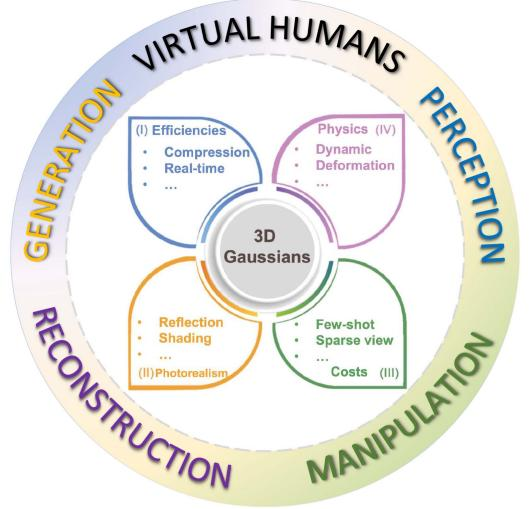
The Number of Papers Related to 3D-GS Since Jul. 2023
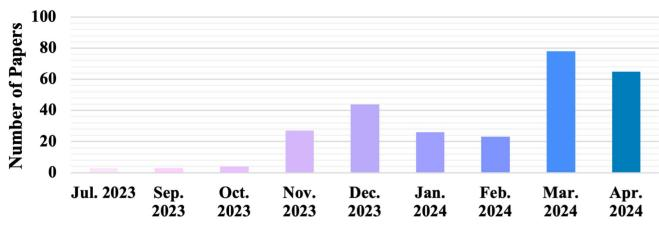
Fig. 1. (Top) The structure of this survey. We begin by introducing the optimization of3D-GS in terms ofefficiency, photorealism, costs, and physics. Then, we review 3D-GS on reconstruction, manipulation, perception, generation, and virtual human applications. (Bottom) The monthly number of publications since July 2023.
Vector quantization (VQ) [44] is widely applied for data compression and encoding. It first categorizes data into clusters of similar vectors and then represents them via a compact codebook. VQ facilitates efficient storage and transmission of data. Therefore, Navaneet et al. [45] proposed CompGS that adopts
VQ to compress the parameters and reduce the memory usage of 3D-GS. Specifically, K-means is performed on the color, spherical harmonics, scale, and rotation vectors separately to obtain relative clusters for efficient quantization. The opacity and position parameters are left untouched since the former is a plain scalar and the quantization of the latter will cause overlapping of Gaussians. The indices of codebooks are represented in fewer bits to improve efficiency. Similarly, Girish et al. [46] introduced EAGLES to utilize VQ for 3D-GS. Specifically, except for the coefficient of base band color spherical harmonics and scaling, and position vectors, all other attributes are quantized and encoded. The continuous approximations are maintained for the back-propagation of gradients. Moreover, EAGLES utilizes a coarse-to-fine training strategy to reduce training time and improve rendering quality. Lee et al. [47] proposed a compact 3D Gaussian representation drastically reducing required storage space. It applies a learnable volume mask to filter out insignificant Gaussians. Then the geometric attributes of selected Gaussians are compressed via residual VQ [48] for memory efficiency.
On the other hand, the lossless octree-based algorithm is also utilized for efficient representation. For instance, Fan et al. [49] proposed LightGaussian to compress Gaussians for memory efficiency. Gaussians are first pruned according to their global significance. Then, the degree of spherical harmonics coefficients are reduced via data distillation and coefficients of trivial Gaussians are quantized. Furthermore, the position parameter is compressed via an octree-based algorithm and the remaining attributes are saved in half-precision format. Ren et al. [50] introduced Octree-GS which built upon Scaffold-GS and leverages octree-based Level-of-Detail (LOD) representation. The octree is constructed for anchoring initialized Gaussians and each anchor is adaptively refined between adjacent levels of LOD.
Moreover, Katsumata et al. [51] proposed to relieve the memory required of 3D-GS for dynamic scene representation.
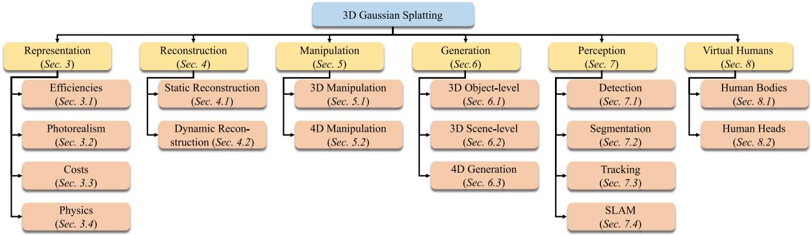
Fig. 2. Taxonomy of existing 3D Gaussian splatting derived methods.
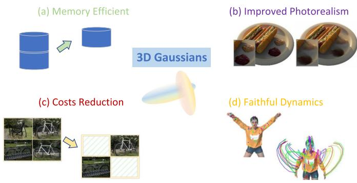
Fig. 3. An illustration ofrefining the representation of3D-GS: (a) Efficiencies, (b) photorealism, (c) costs, and (d) physics. Images courtesy of [40], [41], and [42].
It divides the parameters of Gaussians into time-invariant and time-varying ones. This approach effectively avoids storing parameters in every time step. Furthermore, the flow information is employed to reduce the ambiguity between consecutive frames.
Challenges: Representing scenes with intricate details requires an enormous amount of 3D Gaussians. The tremendous storage space needed for Gaussians not only impedes its application on edge devices but also restrains the rendering speed. On the other hand, excessive insignificant Gaussians could be generated during the reconstruction process. This will not only increase unnecessary memory usage but also degrades rendering quality.
Opportunities: Existing vector quantization and pruning methods have demonstrated their effectiveness in compressing 3D-GS for static scenes. However, i) additional procedures prolong the training time. ii) There is still room to find the minimum set of Gaussians that could maximize the capability for scene representation. iii) Extending existing static methods to dynamic scenarios and improving the compactness of dynamic scene representation are still under-explored.
B. Photorealism
The aliasing issue and artifacts emerge during the splatting process and resolving them is clearly favorable for the quality and realism ofrendered image. Besides, the realism ofreflections within the scene could be further improved.
Yan et al. [52] introduced a multi-scale approach for mitigating the aliasing effect in 3D-GS. They postulate that such an issue is primarily caused by the splatting of large amounts of Gaussions filled in regions with intricate 3D details. Hence, they propose to represent the scene at different levels of detail. For each level, small and fine-grained Gaussians below the size threshold in each voxel are aggregated into larger Gaussians and then inserted into subsequent coarser levels. These multi-scale Gaussians effectively encode both high- and low-frequency signals and are trained with original images and their downsampled counterparts. During rendering, Gaussians with appropriate scale are chosen accordingly, thereby improving quality and increasing rendering speed. Similarly, Zhang et al. [53] proposed FreGS to mitigate the over-reconstruction issue. It utilizes amplitude and phase discrepancies described within Fourier space for regularization. Then, a frequency annealing strategy is adopted for facilitating densification in a coarse-to-fine manner and progressively learns low-to-high frequency components.
Mip-NeRF [15] has been established as an efficient and robust approach within the NeRF domain. Encouraged by Mip-NeRF, Yu et al. [3] introduced 3D smoothing and 2D Mip filters to resolve ambiguities within the optimization process of 3D Gaussians. Derived from the Nyquist-Shannon Sampling Theorem [54], [55], the 3D filter performs as a Gaussian low-pass filter that restrains the frequency of3D representation within half of the maximal sampling rate, which derived from multi-view images, to remove high-frequency artifacts. On the other hand, 2D filter aims to mitigate the aliasing issue when rendering reconstructed scenes at a lower sampling rate. It replaces the screen space dilation filter of 3D-GS and replicates the behavior of a box filter from the physical imaging process [56], [57].
Except for the improvement of rendering details, lighting decomposition is also an urgent challenge to be solved since the original 3D-GS works not very well on specific materials. Gao et al. [58] introduced a framework for photo-realistic rendering. It utilizes a set of relightable 3D Gaussian points to represent the scenes. The surface normal is regularized via the consistency between the rendered normal and the pseudo normal computed from the rendered depth map. The incident light is divided into local and global components that are represented by spherical harmonics of each Gaussian and shared global spherical harmonics multiplied by a visibility term respectively. Moreover, a technique based on the Bounding Volume Hierarchy [59] is introduced to further use ray tracing to compute visibility for shadows. Jiang et al. [40] proposed GaussianShader to further enhance the realism of scenes with specular features and reflective surfaces. GaussianShader explicitly considers the light-surface interaction and incorporates a simplified approximation of the rendering equation [60] for high-quality rendering with considerably lower time cost. To accurately predict normals on discrete 3D Gaussians, the shortest axis is selected as the approximated normal and two additional trainable normal residuals are introduced for regularization, one for outward and the other for inward axis scenarios. Liang et al. [61] presented GS-IR that introduces 3D-GS to inverse rendering. GS-IR first generates depth and improves it by considering the depth as a linear interpolation of the distances from 3D Gaussians to the image plane. Then the pseudo normals are derived by leveraging the calculated depth and are tied to the depth gradient normal via regularization. The indirect illumination is modeled by a spherical harmonics-based architecture and the occlusion information is pre-computed and cached. Finally, GS-IR adopts differentiable splatting along with a physic-based rendering pipeline, and split-sum approximation [62] to mitigate the intractable integrals. Ma et al. [63] proposed SpecNeRF to improve the modeling of specular reflections especially for near-field lighting conditions. Different from aforementioned methods that ameliorate reflection, SpecNeRF aims to enhance the ability of NeRF by incorporating 3D-GS as a directional encoding. It utilizes a set of learnable Gaussians as the basis to embed a 5D ray space that includes the ray origin and ray direction. Therefore, the encoding function could vary spatially and the change of spatial features aligns with the behavior of specular components.
Challenges: i) The projection of 3D Gaussians onto 2D image drastically accelerates the rendering process, but it complicates the calculation of occlusion which leads to poor estimation of illumination. ii) 3D-GS is under-regularized for capturing precise geometry information and generating accurate normals. iii) Over-constructed Gaussians could cause aliasing and artifacts that deteriorate the quality of rendered images. iv) 3D-GS falls short in scenes with mirror-like objects and intricate reflections. v) Reconstruct scenes from images with imprecise camera pose or motion blur poses new challenges to 3D-GS.
Opportunities: i) View-dependent variations are critical for scenes featuring specular objects and complex reflections. Hence, empowering 3D-GS to capture significant appearance properties is beneficial for enhancing the realism of rendering. ii) It is essential to filter out and prune excessively constructed Gaussians, which cause artifacts and floater issues, without compromising the expressive capability and rendering quality. iii) Although the lack of rigorous normal estimation regularization which impedes the amelioration of image quality could be compensated by off-the-shell monocular normal estimator, the introduced intrinsic error should be further addressed.
C. Costs
To synthesize novel views with high quality, a substantial number of images is necessary. Loosening this limitation is desirable for further exploring the potential of 3D-GS.
Several works have been proposed to solve the few-shot problem in 3D-GS. Chung et al. [7] introduced a depth-regularized approach to avoid overfitting in few-shot image synthesis. Geometry constraints are introduced by exploiting both sparse and dense depth maps obtained from COLMAP [43] and a monocular depth estimation model respectively. To prevent overfitting, this approach adopts unsupervised constraint for geometry smoothness [64] and utilizes Canny edge detector [65] to avoid regularization in edge areas where depth varies significantly. Zhu et al. [42] proposed FSGS for novel view synthesis under limited observations. Inspired by vertex-adding strategy [66], it gradually grows the initialized 3D Gaussians that are derived from SfM [43] to fill the scene. The sparse Gaussians are utilized to construct a directed proximity graph that connects the nearest K neighbors and the proximity score of each Gaussian is subsequently calculated from the average distance to its neighbors. FSGS then proposes proximity-guided Gaussian unpooling to densify Gaussians and exploit Pearson correlation loss to provide a soft constraint. Additionally, FSGS employs pseudo-view augmentation through a 2D prior model to mitigate the issue of overfitting to sparse training views. Xiong et al. [67] introduced SparseGS for few-shot view synthesis. Similar to SparseNeuS [68], it adopts a depth map for regularization and proposes to apply an additional pre-trained depth estimation model [69], [70] for computing a patch-based Pearson correlation between the two depth loss terms. The absence of images for uncovered regions is compensated by utilizing a generative diffusion model and 3D-GS is guided via Score Distillation Sampling [71]. Furthermore, SparseGS devises a pruning strategy to identify and remove the parts where floating artifacts exist or background collapse. Li et al. [72] introduced DNGaussian to exploit depth information to enhance sparse-view reconstruction. Specifically, it proposes hard and soft depth regularization strategies to enforce the nearest Gaussians to compose complete surfaces. Besides, the scaling and rotation parameters are frozen to reduce their negative impact on color reconstruction. DNGaussian also normalizes both local and global depths to correct small local depth errors and be aware of global scale losses respectively.
Challenges: The performance of 3D-GS heavily relies on the quantity and accuracy of initial sparse points. This default initialization method contradicts the aim of image cost reduction and makes it grueling to achieve. The sparse input views could not only cause insufficient initialization of Gaussians, which may not only lead to collapsed reconstruction but also increase the chance of over-fitting and yielding over-smoothed results.
Opportunities: i) Employing an additional monocular depth estimation model provides useful geometry priors to adjust 3D Gaussians for more effective coverage of unseen views. However, this strong dependency on the estimation accuracy could lead to poor reconstruction of scenes with complex surfaces where the model fails to output accurate prediction. ii) Compensating absent views via pre-trained generative models could mitigate the inadequate initialization issue. But the misaligned consistency between generated views and sparse inputs can lead to distortion in reconstructed scenes especially when dealing with scenes comprising complex details and multiple objects.
iii) Exploring more diverse visual cues is promising to facilitate the reduction of image costs.
D. Physics
It is beneficial to enhance the ability of 3D Gaussians Splatting by extending it from representing static scenes to 4D scenarios that could incorporate faithful dynamics that align with realworld physics.
In dynamic scenes, learning deformation is more convenient than modeling scenes at every time step. Wu et al. [4] proposed 4D-GS for real-time 3D dynamic scene rendering. Instead of directly constructing 3D Gaussians for each time-stamp with excessive memory costs, 4D-GS first employs a spatial-temporal encoder that utilizes multi-resolution K-Planes [73] and MLP for effective feature extraction. The compact multi-head MLPs then perform as the decoder and separately predict the deformation of 3D Gaussians based on the input feature. Meanwhile, Lu et al. [74] proposed a framework that incorporates both canonical and deformation fields. The geometric information is first extracted in the canonical space through a combination of MLPs and 3D U-Net. This information is subsequently utilized to estimate time-dependent 6D Gaussian deformation. The density control strategy is also adapted to dynamic scenarios in which it only considers attributes estimated for the current time stamp. Duisterhof et al. [75] introduced MD-Splatting that adopts a feature encoding technique [4], [76] and learns the Gaussian deformation in a metric space rather than a non-metric canonical one. The opacity and scale parameters are not inferred since learning them over time would allow Gaussians to disobey the accurate motion ofpoints. Furthermore, the rigidity and isometry losses [77] along with a conservation of momentum loss are incorporated to regularize the trajectory.
Moreover, Kratimenos et al. [41] presented DynMF that decomposes complex motions within a given scene into a few basis trajectories from which each point or motion can be adequately derived. The trajectories are then predicted through an MLP which inherently forms a motion neural field. The sharing of neural basis across all points yields physically plausible and frame-consistent sequences. To prevent the selection of unnecessary basis and enforce strict sparsity, DynMF adopts a stronger loss term that forces each Gaussian to choose only a few trajectories. Sun et al. [78] introduced 3DGStream, a two-stage framework that captures dynamics on the fly for free-viewpoint videos. Inspired by [79], [80], 3DGStream utilizes a multiresolution voxel grid as scene representation and adopts hash encoding along with shallow MLP as the Neural Transformation Cache (NTC). During the first stage, NTC is trained to learn the translation and rotation of 3D Gaussians for the next time stamp. Then, Gaussians are adaptively spawned under quality control to reconstruct subsequent frames. Yang et al. [81] proposed 4DGS to model space and time as an entirety to address general dynamic scene representation and rendering. 4DGS extends the scaling and rotation matrix that is decomposed from the original covariance matrix [1] to 4D Euclidean space. The derived general 4D Gaussian representation achieves reasonable fitting to 4D manifold while capturing the underlying dynamics of the scene. Additionally, 4DGS allows the appearance to vary with viewpoint and colors to evolve through time by exploiting the spherindirical harmonics, realizing a more faithful rendering of the dynamic scenes from the real world.
To seamlessly integrate physical simulation within 3D-GS, Xie et al. [82] introduced PhysGaussian for generating faithful novel dynamics and views. It first reconstructs a static scene via 3D-GS and over-skinny Gaussians could be regularized via an optional anisotropic loss. The simulation of continuum mechanics is incorporated through a time-dependent continuous deformation map. Gaussian kernels are then treated as discrete particle clouds and simultaneously deform with the continuum. To enforce the deformed kernels under the deformation map to be a Gaussian, PhysGaussian utilizes the first-order approximation to characterize the particles undergoing local affine transformations. Additionally, the internal area of objects could be optionally filled via the 3D opacity field to assist in the rendering of exposed internal particles.
Challenges: The intrinsic sparsity of input point clouds poses an essential challenge for the reconstruction of scenes with faithful dynamics. It is even more challenging to capture physically plausible dynamics while maintaining the quality. Moreover, large dynamic motions also remain an open question if no physical constraints are applied.
Opportunities: Objects with large motions could cause unnatural distortion among consecutive frames and incorporating neural networks with learned scene-specific dynamics could improve the fidelity of deformations. Current methods for reconstruction of dynamic scenes mainly focus on indoor object-level deformations and they still require images taken from multiple camera views along with the precise camera pose. Extending 3D-GS to larger dynamic scenes and introducing physical constraints into 3D-GS optimization might be able to relax these limitations in large dynamic scenes, which is beneficial for real-world applications.
IV. RECONSTRUCTION
The widespread adoption of 3D-GS owes much to its exceptional rendering speed and ability to synthesize realistic scenes from novel viewpoints. Similar to NeRFs, mesh extraction and surface reconstruction in static scenes is a fundamental yet essential aspect. Further investigation is necessary to tackle challenging scenarios, such as monocular or few-shot situations, which are commonly encountered in practical applications like autonomous driving. Additionally, the training times of 3D-GS are on the order of minutes, enabling real-time rendering and facilitating the reconstruction of dynamic scenes.
In this section, as shown in Fig. 4, we delve into exploring related research from two perspectives: static reconstruction and dynamic reconstruction.
A. Static Reconstruction
Surface reconstruction and mesh extraction in static scenes is a classic challenge. However, the explicit representation of3D-GS distribution introduces a significant level of complexity to this task. Consequently, several novel methods have been proposed to effectively address this complexity and facilitate static-scene reconstruction.
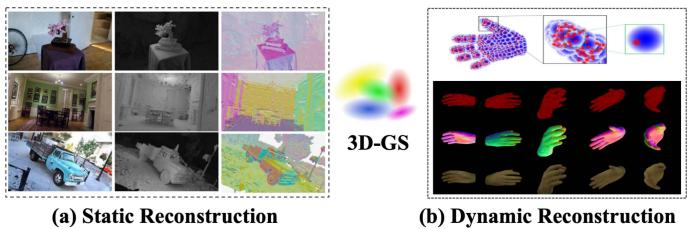
Fig. 4. An illustration of 3D-GS on reconstruction: (a) Static reconstruction, (b) dynamic reconstruction. Images courtesy of [6], and [83].
Guédon et al. [6] introduced SuGaR for 3D mesh reconstruction and high-quality mesh rendering. SuGaR incorporates a regularization term to promote alignment between the Gaussians and the scene’s surface. The Poisson reconstruction method is then used to leverage this alignment and derive a mesh from the Gaussians. To bind the Gaussians to the mesh surface, SuGaR presents an optional refinement strategy that optimizes both Gaussians and mesh using 3D-GS rendering. However, the mandatory restrictions on the Gaussians result in a decrease in rendering quality. Meanwhile, Chen et al. [84] introduced NeuSG that jointly optimizes NeuS [85] and 3D-GS to achieve highly detailed surface recovery. Similar to the regularization term in SuGaR [6], NeuSG incorporates regularizers to ensure that point clouds generated from extremely thin 3D Gaussians closely adhere to the underlying surfaces. NeuSG leverages the benefits of joint optimization, resulting in the generation of comprehensive surfaces with intricate details.
On the other hand, 3D-GS represents a promising solution in monocular and few-shot reconstruction tasks. However, a significant challenge in these tasks is the absence of geometric information. To this end, numerous methods have been proposed to overcome the lack of geometric information in the perspective.
Few-shot 3D reconstruction allows for reconstructing 3D scenes with limited input data. Charatan et al. [86] presented pixelSplat for 3D reconstruction from image pairs to address the challenge of scale factor inference by proposing a multi-view epipolar transformer. With scale-aware feature maps, pixelSplat predicts the parameters ofa set ofGaussian primitives. The scene is parameterized through pixel-aligned Gaussians, enabling the implicit densification or deletion of Gaussian primitives during training, avoiding local minima while ensuring a smooth gradient flow. Notably, pixelSplat demonstrates exceptional performance in capturing intricate details and accurately inferring 3D structure, particularly in regions of the scene that are only observable from a single reference view. Zou et al. [87] utilized two transformer-based networks to perform single-view 3D object reconstruction using a hybrid representation named Triplane-Gaussian, which combines an explicit point cloud with an implicit triplane field. By incorporating local image features for projection-aware conditioning within the transformer networks, Triplane-Gaussian enhances consistency with the input observation. Triplane-Gaussian leverages both explicit and implicit representations, resulting in efficient and high-quality single-view reconstruction.
Monocular 3D reconstruction is capable of inferring the shape and structure of a 3D scene from 2D images using a single camera. The key to monocular 3D reconstruction involves the meticulous analysis of perspective relationships, textures, and motion patterns within the images. By employing monocular techniques, it becomes possible to accurately estimate the distances between objects and discern the overall shape of the scene. Szymanowicz et al. [88] introduced Splatter Image, an ultra-fast method for monocular 3D object reconstruction, demonstrating rapid training and evaluation on both synthetic and real benchmarks without the need for canonical camera poses. This approach utilizes a 2D CNN to efficiently process images, predicting a pseudo-image where each pixel is represented by a colored 3D Gaussian. Das et al. [89] introduced Neural Parametric Gaussians (NPGs) for reconstructing dynamic objects from monocular videos. NPGs employs a twostage reconstruction approach: learning coarse deformation and using it as a constraint for the reconstruction. In the initial stage, a coarse parametric point model is implemented based on a low-rank deformation, providing regularization and temporal correspondences. The second stage involves optimizing 3D Gaussians, anchored in and deformed by locally oriented volumes. NPGs improve non-rigid novel view synthesis from a monocular camera, particularly in challenging scenarios with limited multi-view cues.
B. Dynamic Reconstruction
The high rendering speed and resolution of 3D-GS support dynamic scene reconstruction, including human body tracking and large urban scene reconstruction.
Several methods for dynamic scene reconstruction focus on reconstructing specific dynamic objects or reconstructing small but real-world dynamic scenes from daily life videos. Jiang et al. [83] introduced 3D-PSHR for real-time dynamic hand reconstruction. 3D-PSHR incorporates a self-adaptive canonical points upsampling strategy and self-adaptive deformation, enabling pose-free hand reconstruction. Furthermore, for texture modeling, 3D-PSHR separates the appearance color into intrinsic albedo and pose-aware shading based on normal deformation. Lin et al. [90] introduced Gaussian-Flow for swift dynamic indoor scene reconstruction and real-time rendering. Gaussian-Flow introduces the Dual-Domain Deformation Model to capture the time-dependent residual of each attribute through polynomial fitting in the time domain and Fourier series fitting in the frequency domain. Gaussian-Flow can effectively eliminate the necessity of training separate Gaussians for each frame or introducing an additional implicit neural field to model 3D dynamics. Yang et al. [91] proposed a deformable 3D-GS for reconstructing scenes by utilizing 3D-GS learned in canonical space with a deformation field to model monocular dynamic scenes. This method incorporates an annealing smoothing training mechanism to mitigate the influence of inaccurate poses on the smoothness oftime interpolation tasks in real-world datasets. This approach attains real-time rendering and high-fidelity scene reconstruction in dynamic scenes.
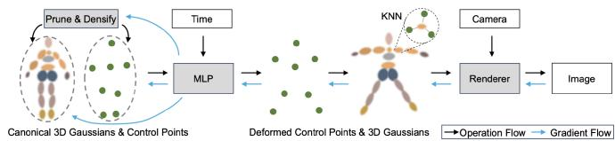
Fig. 5. An illustration of employing sparse control points and a deformation MLP to direct 3D Gaussian dynamics. Images courtesy of [95].
Reconstructing large dynamic scenes, including real-time dynamic urban scenes and driving scenes, is another challenge. Lin et al. [92] introduced VastGaussian for high-fidelity reconstruction and real-time rendering in large scenes. VastGaussian incorporates a progressive data partitioning strategy that assigns training views and point clouds to different cells, facilitating parallel optimization and seamless merging. Additionally, decoupled appearance modeling is integrated into the optimization process, effectively mitigating floaters caused by appearance variations, which can be discarded after optimization to attain real-time rendering speeds. Zhou et al. [93] introduced Driving-Gaussian for representing and modeling large-scale, dynamic driving scenes. DrivingGaussian also facilitates the simulation of corner cases for various downstream tasks, offering a superior synthesis of surrounding views and reconstruction of dynamic scenes. Chen et al. [94] introduced a Periodic Vibration Gaussian (PVG) to modeling large-scale scenes with intricate geometric structures and unconstrained dynamics. PVG demonstrates superior performance in both the reconstruction and novel view synthesis of dynamic and static scenes, all without relying on manually labeled object bounding boxes or expensive optical flow estimation.
Challenges: i) 3D-GS falls short in capturing intricate geometry, raising a challenge for surface mesh extraction. There is a need to constrain the Gaussian kernel to adhere to the object’s surface, but this might lead to a reduction in rendering quality. Alternatively, while 3D-GS can integrate with other representations like Signed Distance Functions (SDF) for precise surface modeling, this fusion might incur a decrease in speed. ii) Several real-time rendering techniques for dynamic scenes often assume the scene to be static. iii) Dynamic scenes with motion blur pose a significant challenge for rendering and reconstruction.
Opportunities: i) For few-shot reconstruction, integrating with a diffusion model or eliminating the requirement for camera poses could facilitate large-scale training. ii) Additionally, introducing lighting decomposition may extract more realistic surface textures. iii) In dynamic scene reconstruction, prioritizing the optimization of the balance between speed and the preservation of image details may prove to be considerable.
V. MANIPULATION
Due to the explicit property of 3D-GS, it has a great advantage for editing tasks as each 3D Gaussian exists individually (Fig. 5). It is easy to edit 3D scenes by directly manipulating 3D Gaussians with desired constraints applied.
A. 3D Manipulation
1) Text-Guided or Image-Guided Manipulation: In recent years, there has been a surge in the number of text-guided or image-guided manipulation [96], [97], [98]. Furthermore, as access to large language models or visual foundation models becomes more widespread, the utilization of foundation model guided manipulation holds great promise as a future direction. Fang et al. [99] presented GaussianEditor to precisely edit 3D scenes using 3D Gaussians and text instructions. The first step involves extracting the region of interest (RoI) that corresponds to the provided text instruction and aligning it with the 3D Gaussians. This Gaussian RoI is then utilized to control the editing process, enabling fine-grained adjustments.
Most recently, Zhuang et al. [100] proposed TIP-Editor, which accepts text and image prompts as well as 3D bounding boxes to specify the editing area. Image prompts facilitate the specification of detailed appearance and style for the target content, enhancing the textual description and allowing for precise control. TIP-Editor utilizes a sequential 2D personalization strategy to enhance the learning of scene representations and reference images. Additionally, TIP-Editor uses an unambiguous and flexible 3D-GS to facilitate local editing while keeping the background unchanged.
Gao et al. [101] introduced a mesh-based Gaussian Splatting for representing 3D Gaussians. This technique effectively combines the mesh representation with 3D Gaussians, leveraging the mesh to guide the splitting process and enhancing the overall quality of the learned GS. They propose a Gaussian deformation strategy on a large scale, which not only utilizes vertex positions but also incorporates deformation gradients to guide the GS.
2) Non-Rigid Manipulation: Non-rigid objects can change and deform in shape, enabling more realistic simulations of soft objects, biological tissues, and fluids. These objects offer several advantages, including increased authenticity and improved depiction of object deformation and behavior [102]. Moreover, these models allow for diverse effects as they can respond to external forces and constraints by deforming [103]. However, non-rigid objects also present challenges. They are characterized by their complexity, necessitating careful consideration of factors such as object deformation, continuity, and collision during both editing and simulation. Additionally, the real-time interaction performance of non-rigid objects may be limited in applications, particularly when dealing with large-scale and complex non-rigid objects [104].
Pokhariya et al. [105] introduced an articulated 3D Gaussian representation. Specifically, they proposed MANUS-Hand for articulated hands, which leverages 3D-GS to achieve precise shape and appearance representation. In addition, they introduced MANUS to combine MANUS-Hand with a 3D Gaussian representation of the object to model contacts accurately. They also introduced MANUS-Grasps, an extensive real-world multi-view RGB grasp dataset, comprising over 7 million frames captured by 53 cameras, providing comprehensive 360-degree coverage of more than 400 grasps across various everyday life scenarios. Lei et al. [106] introduced GART for non-rigid articulated subjects. GART approximates the radiance field of the canonical shape and appearance using a Gaussian Mixture Model. Additionally, GART can be effectively animated through a learnable forward skinning technique. This representation is capable of capturing complex deformations, including loose clothing on human subjects.
3) Time-Efficient Editing: While 3D-GS is indeed a rapid rendering technique, it is crucial to operate in real-time while editing 3D Gaussians. Consequently, there is an urgent need to develop editing methods for 3D-GS that are time-efficient.
Huang et al. [107] proposed Point’n Move to enable interactive manipulation of scene objects through exposed region inpainting. The interactivity is enhanced by intuitive object selection and real-time editing. To achieve this, they took advantage of the explicit nature and speed of 3D-GS. The explicit representation formulation allows for a dual-stage self-prompting segmentation algorithm, where 2D prompt points are used to create 3D masks. This algorithm facilitates mask refinement and merging, minimizes changes, provides a good initialization for scene inpainting, and enables real-time editing without the need for per-editing training. At the same time, Chen et al. [108] introduced GaussianEditor for 3D editing that employs 3D-GS to augment control and efficiency throughout the editing procedure. GaussianEditor employs Gaussian semantic tracing to accurately identify and target specific areas for editing. It then utilizes Hierarchical Gaussian Splatting to strike a balance between fluidity and stability. Moreover, GaussianEditor includes a specialized 3D inpainting algorithm, which streamlines the removal and integration of objects and significantly reduces editing time.
B. 4D Manipulation
The field of 4D scene reconstruction has experienced notable progress with the introduction of dynamic neural 3D representation. These advancements have greatly improved the capacity to capture and depict dynamic scenes. However, despite these breakthroughs, the interactive editing of these 4D scenes continues to present significant obstacles. The main challenge lies in guaranteeing spatial-temporal consistency and maintaining high quality during 4D editing, while also providing interactive and advanced editing capabilities.
Shao et al. [109] introduce Control4D for editing dynamic 4D portraits using text instructions. Control4D aims to overcome the challenges commonly encountered in 4D editing, particularly the limitations of existing 4D representations and the inconsistent editing outcomes resulting from diffusion-based editors. GaussianPlanes was first proposed as a novel 4D representation, which enhances the structure of Gaussian Splatting through plane-based decomposition in both 3D space and time. This approach improves the efficiency and robustness of 4D editing. Additionally, a 4D generator is leveraged to learn a more continuous generation space from the edited images produced by the diffusion-based editor, effectively enhancing the consistency and quality of 4D editing. Huang et al. [95] proposed SC-GS to model scene motion using sparse control points in conjunction with an MLP. To facilitate the accurate learning of appearances, geometry, and motion from monocular videos, adaptive learning strategies are employed, along with the incorporation ofa regularization loss that enforces rigid constraints. By adopting this sparse motion representation, SC-GS enables motion editing by manipulating the learned control points while preserving high-fidelity appearances. Yu et al. [110] introduced Controllable Gaussian Splatting (CoGS) for dynamic scene manipulation. The explicit nature of CoGS not only enhances rendering efficiency but also simplifies the manipulation of scene elements. The control signal can be obtained through a three-step process: i) Selecting a set of Gaussians to accurately represent movement within the control part. ii) Applying Principal Component Analysis to identify the primary movement direction. iii) Normalizing the distances of all points from the starting point to a range between 0 and 1, thereby generating the control signal. After acquiring the control signal, the subsequent critical step involves integrating it into the network to enable manipulation using these signals. This integration is achieved by constructing a unique network for each control signal. These networks are specifically designed to generate the corresponding offset for each Gaussian attribute, as determined during the dynamic modeling phase. This ultimate step ensures accurate and efficient control over dynamic scene renderings.
Challenges: i) The selection of RoIs relies on the performance of segmentation models, which are influenced by noises. ii) When editing 3D Gaussians, several important physical aspects are often overlooked. large editing will lead to artifacts. iii) There is still potential for enhancing frame consistency in 4D editing.
Opportunities: i) To enhance the accuracy of editing, it is possible to incorporate more advanced segmentation models into the 3D-GS framework. ii) More complex and multiple physics should be considered to ensure smooth editing. iii) Existing methods have primarily been tested with minimal motion changes and accurate camera poses. Expanding their applicability to scenarios involving intense movements remains an area of investigation. iv) Existing 2D diffusion models encounter difficulties in providing adequate guidance for intricate prompts, resulting in constraints when it comes to 3D editing. Therefore, efficient and accurate 2D diffusion models can be utilized as better guidance for editing 3D Gaussians.
VI. GENERATION
Thanks to the significant progress made in diffusion models and 3D representations, generating 3D assets from text/image prompts is now a promising task in AIGC. Furthermore, resorting to 3D-GS as the explicit representation of the object (Fig. 6(a)) and the scene (Fig. 6(b)) makes fast or even real-time rendering possible. While 3D generation has shown some impressive results, 4D generation (Fig. 6(c)) remains a challenging and under-explored topic.
A. Object-Level 3D Generation
3D diffusion models provide 3D consistency in 3D generation, while 2D diffusion models enjoy strong abilities of generalization. Combining the best ofboth worlds, Yi et al. [114] proposed GaussianDreamer for fast generation and real-time rendering. GaussianDreamer first initializes 3D Gaussians with the assistance of the 3D diffusion model to acquire geometry priors and introduces two operations of noisy point growing and color perturbation to supplement the initialized Gaussians for further content enrichment. Later, 3D Gaussians are optimized with the help of the 2D diffusion model and text prompts via the SDS. However, such a method still suffers from multi-face problems. Chen et al. [115] proposed to guide the generation with the ordinary 2D SDS loss and an additional 3D point cloud diffusion prior to mitigating the Janus problem [116]. Specifically, this method first initializes 3D Guassians from customized shapes or Point-E [117] and then optimizes the representations with a combination of 2D and 3D SDS loss in the geometry optimization stage. Also using SDS, Xu et al. [118] proposed an amortized feed-forward pipeline called AGG, which can generalize to unseen objects of similar categories. AGG can reduce the need for test-time optimization by trading off the computation cost of the inference stage with the training stage. AGG takes a single image as input and decomposes the geometry and texture generation task into two distinct networks to produce 3D Gaussians at a low resolution. Subsequently, a UNet with point-voxel layers is utilized to super-resolve the 3D-GS, improving its fidelity. However, such a practice also limits the number of Gaussians generated to represent very complex geometry. Tang et al. [111] propose DreamGaussian to improve the 3D generation efficiency by replacing NeRF with 3D-GS. Specifically, DreamGaussian simplifies the optimization landscape with the progressive densification of 3D-GS, which initializes Gaussians with random positions and densifies them periodically to align with the generation progress. To enhance the generation quality, it further introduces an efficient mesh extraction algorithm with the block-wise local density query and a UV-space texture refinement stage that performs image space supervision.
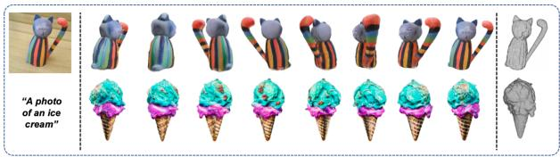
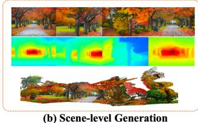
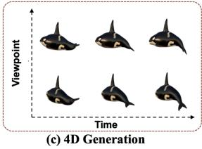
Fig. 6. An illustration of 3D-GS on generation tasks: (a) Object-level generation, (b) scene-level generation, and (c) 4D generation. Images courtesy of [111], [112], and [113].
The over-smoothing effect in SDS-based 3d generation methods has been identified. It has been revealed that the oversmoothing issue is mainly caused by the inconsistent and lowquality pseudo-GTs generated by the 2D diffusion models. Motivated by these observations, Liang et al. [119] proposed an Interval Score Matching (ISM) to counteract such deficiency.
Specifically, DDIM inversion is introduced to increase the consistency of pseudo-GTs, making them more aligned with the inputs. Furthermore, to obtain pseudo-GTs with better visual quality, ISM chooses to conduct matching between two interval steps in the diffusion trajectory instead of matching the pseudo-GTs with images rendered by the 3D model.
B. Scene-Level 3D Generation
Vilesov et al. [120] proposed CG3D to compositionally generate scalable 3D assets to form physically realistic scenes from text input only. CG3D represents each object in a scene with a set of Gaussian and converts objects into compositional coordinates with interaction parameters like rotation, translation, and scale.
Diffusion models trained on 3D scan datasets are inherently limited to generating domain-specific scenes due to the unrealistic nature of the training sets. LucidDreamer [121] is proposed to create domain-free and high-quality 3D scenes from various types of inputs such as text, RGB and RGBD. With the help of Stable Diffusion [122] and the estimated depth map, LucidDreamer first initializes the point cloud and then refines the point cloud through Dreaming and Alignment processes to form the SfM points for the optimization of Gaussian splats. The dreaming process creates new 3D points by completing partially projected images and lifting them into 3D space while the Alignment process seamlessly connects the new 3D points to the existing point cloud. Similarly, Text2Immersion [112] produces consistently immersive and photo-realistic scenes from text prompts with a two-stage optimization of 3D Gaussians. In the first stage, an initial coarse Gaussian cloud is constructed incrementally, leveraging pre-trained 2D diffusion and depth estimation models under a set of anchor cameras rotated from the center view. Since the anchor cameras are selected only by rotation but not translation, a large portion of missing regions and noisy appearance may exist in the generated scene. Thus, the second stage focuses on 3D Gaussian refinement by incorporating additional views to fill in the missing areas and mitigate the issue of Gaussian noises.
C. 4D Generation
Ling et al. [123] introduced Align Your Gaussians (AYG) to extend 3D synthesis to 4D generation with an additional temporal dimension. The 4D representation combines 3D Gaussian with deformation fields, which model scene dynamics of 3D Gaussians and transform the collection of them to represent object motion. AYG begins with generating an initial static 3D shape with a 3D-aware multi-view diffusion model and a regular text-to-image model. Then, a text-to-video model and a text-to-image model are used to optimize the deformation field to capture temporal dynamics and maintain high visual quality for all frames, respectively. Furthermore, a motion amplification mechanism as well as a new autoregressive synthesis scheme are adopted to generate and combine multiple 4D sequences for longer generations. Notably, due to the explicit nature of 3D Gaussians, different dynamic scenes, each with its own set of Gaussians and deformation field, can be combined, thereby enabling the composition ofmultiple 4D objects into large dynamic scenes. 4DGen [113] also leverages static 3D assets and monocular video sequences to conduct 4D generation. Both components can either be specified by users or generated by the multi-view diffusion model SyncDreamer [124] and the video generation model. To guarantee consistency across frames, SyncDreamer is also used to construct point clouds from the anchor frames as 3D pseudo labels for scene deformation.
NeRF-based 4D generation methods, like their counterparts in 3D domain, also experience long optimization time problems. DreamGaussian4D [125], a follow-up work of DreamGaussian [111], utilizes the explicit modeling of spatial transformations in 3D-GS to simplify the optimization in image-to-4D generation. It first creates static 3D Gaussians from the input image using an enhanced variant of DreamGaussian called DreamGaussianHD. For the dynamic optimization, a driving video obtained from Stable Video Diffusion is employed to optimize a time-dependent deformation field upon the static 3D Gaussians so as to learn the controllable and diverse motions. Finally, a video-to-video texture refinement strategy is adopted to enhance the quality of exported animated meshes.
To improve the efficiency in 4D generation domain, Pan et al. [126] propose Efficient4D, a fast video-to-4D object generation framework free of heavy supervision back-propagation through the large pre-trained diffusion model. To obtain labeled data for the training of 4D Gaussian Splating, it utilizes an enhanced version of SyncDreamer to generate multi-view images of sampled frames in the input single-view video. Specifically, Efficient4D revises SyncDreamer with a time-synchronous spatial volume and a smoothing filter layer to impose temporal consistency across frames. During the reconstruction stage, Efficient4D optimizes 4D Gaussian representation using an inconsistency-aware loss function for coherent modeling of dynamics in both space and time.
Challenges: i) Compositional generation remains an open problem since most methods do not support such creation [111], [113], [114], [118]. Even though CG3D [120] is a compositional framework, it supports only rigid-body interactions between objects. Besides, the compositional 4D sequences in AYG [123] fail to depict the topological changes of the dynamic objects. ii) It is non-trivial to adapt the adaptive density control operation in the original 3D-GS to the generation framework and fix the number of Gaussians used to represent an object. However, such a design severely limits the model’s capability of creating complex geometry.
Opportunities: i) The multi-face problem, also known as Janus problem, exists in most 2D lifting methods [111], [120]. GaussianDreamer [114] manages to alleviate such deficiency by introducing 3D priors. In light of this, utilizing 3D-aware diffusion models or multi-view 2D diffusion models may be the possible direction for further improvement. ii) Text-to-3D methods tend to produce unsatisfying results when the textual prompt is comprised of ambiguous information and complicated logic. In this regard, enhancing the language understanding ability of the text encoder may also be able to boost the generation quality. iii) The generation of 3D scenes is currently constrained by the level of detail. Thus, exploring compositional generation for 3D scenes emerges as a promising direction.
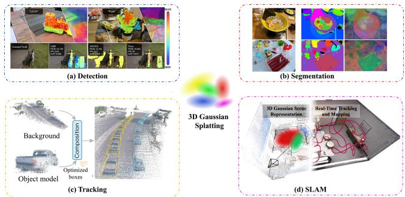
Fig. 7. An illustration of 3D-GS on perception: (a) Detection, (b) segmentation, (c) tracking, and (d) SLAM. Images courtesy of [127], [128], [129], and [130].
VII. PERCEPTION
Leveraging 3D-GS, 3D perception has the potential to enhance open-vocabulary semantic object detection and localization (Fig. 7(a)), 3D segmentation (Fig. 7(b)), tracking of moving objects (Fig. 7(c)), and Simultaneous Localization and Mapping (SLAM) systems (Fig. 7(d)). Note that in domains like perception and scene comprehension in autonomous driving, numerous studies encompass at least two tasks.
A. Detection
The process of semantic object detection or localization in a 3D scene can significantly enhance environmental understanding and perception, as well as benefit applications such as autopilot systems and intelligent manufacturing.
Encouraged by ChatGPT, Shi et al. [128] introduced Language Embedded 3D Gaussians, a scene representation specifically crafted for open-vocabulary query tasks, successfully incorporating quantized compact semantic features onto extensive 3D-GS, minimizing memory and storage requirements. To mitigate semantic inconsistencies arising from varying perspectives, a feature smoothing procedure is proposed to dynamically reduce the spatial frequency of embedded semantic features, leveraging spatial position and semantic uncertainty of 3D-GS. At the same time, Zuo et al. [131] proposed Foundation Model Embedded Gaussian Splatting (FMGS), which integrates 3D-GS for the representation of geometry and appearance, along with Multi-Resolution Hash Encodings for efficient language embedding. FMGS exhibits multi-view semantic consistency and impressive performance in localizing semantic objects within an open-vocabulary context.
B. Segmentation
The significance of 3D scene segmentation lies not only in improving the accuracy of scene segmentation but also in providing robust support for real-world 3D perception tasks. The applications of 3D scene segmentation methods, ranging from real-time scene editing and object removal to object inpainting and scene recomposition, have undoubtedly broadened the horizons of computer vision in domains including virtual reality and autonomous driving.
Several approaches draw inspiration from 2D visual foun dation models [132], [133] to leverage their robust zero-shot segmentation capabilities for guiding the segmentation of 3D-GS. In this way, the advantages of the 2D model can be utilized to improve the accuracy and effectiveness of the segmentation process in the 3D domain. For instance, Ye et al. [129] introduced Gaussian Grouping for simultaneous reconstruction and segmentation of diverse elements within open-world 3D scenes. The proposal includes an Identity Encoding for 3D Gaussians, supervised by both 2D mask predictions from SAM and 3D spatial consistency, which enables each Gaussian to be associ ated with its represented instances or elements in the 3D scene. Meanwhile, Cen et al. [134] presented the Segment Any 3D Gaussians (SAGA) to integrate a 2D segmentation foundation model with 3D-GS for 3D interactive segmentation. SAGA incorporates multi-granularity 2D segmentation results from the foundation model into 3D Gaussian point features, eliminating the requirement for the time-consuming multiple forwarding of the 2D segmentation model during inference. SAGA trains 3D features for Gaussians based on automatically extracted masks, and a set of queries is generated with input prompts, efficiently retrieving the expected Gaussians through feature matching. Furthermore, SAGA facilitates multi-granularity segmentation and accommodates various prompts, such as points, scribbles, and 2D masks. Also inspired by 2D foundation models, Zhou et al. [127] proposed Feature-3DGS, a feature field distillation technique based on 3D-GS. Feature-3DGS initially acquires a semantic feature from each 3D Gaussian, in addition to the color information. By utilizing differentiable splatting and rasteriza tion techniques on the feature vectors, Feature-3DGS facilitate the extraction of the feature field while being guided by 2D foun dation models. Furthermore, Feature-3DGS acquires knowledge ofa well-organized, lower-dimensional feature field. This field i subsequently enhanced through the utilization of a streamlined convolutional decoder during the final stages of the rasterization process. Feature-3DGS facilitates complex semantic tasks such as editing, segmentation, and language-prompted interactions. Hu et al. [135] proposed a SA-GS for segmenting objects in 3D-GS. SA-GS does not necessitate any training process or learnable parameters. The segmentation accomplished through SA-GS facilitates efficient collision detection and scene edit ing operations, encompassing object removal, translation, and rotation within 3D scenes.
C. Tracking
As discussed in Section IV, utilization of3D-GS facilitates the reconstruction of dynamic scenes. Consequently, the tracking of dynamic objects within these scenes has emerged as a novel area of exploration, contributing significantly to applications such as autonomous driving.
Yan et al. [130] introduced StreetGaussian for modeling dynamic urban street scenes from monocular videos. Street-Gaussian represents the dynamic urban street as a collection of point clouds that are augmented with semantic logits and 3D Gaussians. To accurately represent the movement of foreground objects, they optimize each object’s point cloud by incorporating trackable poses and a dynamic spherical harmonics model to account for their dynamic appearance.
Since tracking the movement ofsmall objects can be challenging, Cotton et al. [5] applied dynamic Gaussian splatting [77] with depth supervision to analyze sparse, markerless motion capture data, specifically focusing on the accurate assessment of movement in infants and neonates. Additionally, an alternative dynamic tracking method using deformation fields was implemented based on Deformable 3D-GS [91]. This method models the changes in location, rotation, and scale by considering the initial 3D locations and the desired time point. Deformable 3D-GS has illustrated its ability to produce innovative viewpoints of scenes and track the movements of infants.
D. Simultaneous Localization and Mapping
In the realm of 3D perception, the integration of 3D-GS into Simultaneous Localization and Mapping (SLAM) systems has garnered significant attention. In this section, we will explore the diverse applications and advancements in SLAM by integrating 3D-GS. Furthermore, this section underscores the efficacy of current methodologies in addressing real-world scenarios and highlights the continuous growth of possibilities within the SLAM domain.
The real-time rendering capabilities powered by 3D-GS set the stage for online SLAM systems, paving the way for applications such as autonomous driving. Due to the significance of efficiency, Yan et al. [136] presented GS-SLAM, which employs a real-time differentiable splatting rendering pipeline, significantly enhancing map optimization and RGB-D re-rendering speed. It introduces an adaptive strategy for efficiently expanding 3D-GS to reconstruct newly observed scene geometry. Additionally, GS-SLAM uses a coarse-to-fine technique to select reliable 3D-GS, improving camera pose estimation accuracy. Meanwhile, Matsuki et al. [137] introduced a real-time SLAM system for incremental 3D reconstruction. This approach is applicable to both moving monocular and RGB-D cameras, enabling near real-time performance. The proposed method formulates camera tracking for 3D-GS through direct optimization against the 3D Gaussians, facilitating fast and robust tracking with a broad basin ofconvergence. Leveraging the explicit nature of the Gaussians, the method introduces geometric verification and regularization to handle ambiguities in incremental 3D dense reconstruction. Moreover, Huang et al. [138] proposed Photo-SLAM to introduce a hyper primitives map by integrating both explicit geometric features for localization and implicit photometric features for representing texture information. The efficacy of Photo-SLAM in online photorealistic mapping is demonstrated, showcasing its potential for robotic applications in real-world scenarios.
To effectively utilize monocular input data from SLAM, it is crucial to design meticulous methods that incorporate 3D-GS. Keetha et al. [139] presented SplaTAM for dense SLAM with a single monocular RGB-D camera. SplaTAM begins by estimating camera pose using silhouette-guided differentiable rendering. It then dynamically expands map capacity by integrating new Gaussians from rendered silhouettes and depth data. SplaTAM updates the Gaussian map through differentiable rendering, providing explicit knowledge of map extent and streamlining map densification. Yugay et al. [140] introduced strategies to optimize 3D-GS for monocular RGB-D setups. This method extends 3D-GS to enhance geometry encoding, enabling reconstruction beyond radiance fields in monocular settings. This representation facilitates interactive-time reconstruction and photo-realistic rendering.
Challenges: i) The detection ofhighly reflective or translucent objects remains a challenging task as the modeling capabilities of 3D-GS for these objects are limited. ii) A Gaussian distribution can be linked to multiple objects, thereby increasing the complexity of accurately segmenting individual objects utilizing feature matching. iii) The existing tracking methods for dynamic scene objects based on 3D-GS may encounter challenges in tracking deformable objects, such as pedestrians. iv) A SLAM system might exhibit sensitivity to various factors, including motion blur, substantial depth noise, and aggressive rotation. Motion blur occurs when there is rapid movement. Substantial depth noise refers to inaccuracies or fluctuations in the distance measurements. Aggressive rotation implies swift and sudden rotations.
Opportunities: i) Considering the rapid real-time reconstruction capabilities of 3D-GS, detection can be utilized in dynamic scenes. ii) Semantic segmentation based on 3D-GS may leverage other Foundation Models to enhance the segmentation accuracy. iii) Real-time tracking based on 3D-GS has the potential to be applied in various medical scenarios, including radiation therapy. iv) Inputting known camera intrinsics and dense depth is essential for executing SLAM, and eliminating these dependencies presents an intriguing direction for future exploration.
VIII. VIRTUAL HUMANS
Learning virtual human avatars with implicit neural representations like NeRF and SDF suffers from long optimization and rendering time and struggles to generate satisfactory-quality novel body poses. In contrast, utilizing the 3D-GS is experimentally demonstrated to improve training and rendering speeds and offer explicit control of human body deformation. Also, forward skinning in 3D Gaussian-based methods avoids the correspondence ambiguities that are present in inverse skinning used in neural implicit representations [141].
Typically, 3D Gaussian-based methods start with initializing Gaussians with an SMPL body template (Fig. 8(1)) and then deform the representations into the observation space using Linear Blend Skinning (LBS). Gaussians are then rendered and supervised by either multi-view (Fig. 8(Left)) or monocular videos (Fig. 8(Right)). Besides, some methods specialize in reconstructing human head avatars (Fig. 8(2)).
A. Human Bodies
1) Multi-View Video Synthesis: Moreau et al. [142] proposed HuGS to render photo-realistic human body avatars from multi-view videos with an animatable human body represented with a set of 3D Gaussians. 3D Gaussians in HuGS build upon the original setting with an additional skinning weight vector that regulates the influence of each body joint on how the Gaussian moves and a latent code that encodes the non-rigid motion. HuGS applies LBS to deform the canonical primitives initialized by the SMPL model and learns only the skinning weights. Since LBS only encodes the rigid deformations of the body joints, HuGS subsequently introduces a local non-rigid refinement stage to model the non-rigid deformation of the garments, considering both the body pose encoding and ambient occlusions. Based on the observation that explicit point-based representations have the potential to be parameterized on 2D maps, Li et al. [146] facilitate Gaussian-based modeling with 2D CNNs to faithfully reconstruct higher-fidelity avatars. After obtaining the character-specific template from multi-view images and diffusing into it the skinning weights of SMPL, this method predicts two pose-dependent canonical Gaussian maps in the UV space through StyleUNet [147]. Specifically, given a training pose, the template is first deformed to the posed space via LBS, and two position maps are produced by orthogonal projection of the posed template to the front and back views. Subsequently, Gaussian maps are generated with position maps serving as the pose condition, and thus canonical Gaussians are extracted from each pixel. ASH [148] also attaches Gaussian splats to the deformable character model [35] and parameterizes them in 2D texture space, with each texel covered by a triangle representing a Gaussian. Besides, a 2D geometry decoder and a 2D appearance decoder are adopted to separately predict the shape-related parameters and the Spherical Harmonics. Subsequently, Gaussian splats from the canonical position are transformed to the posed space through dual quaternion skinning [149] and supervised solely on the multi-view videos.
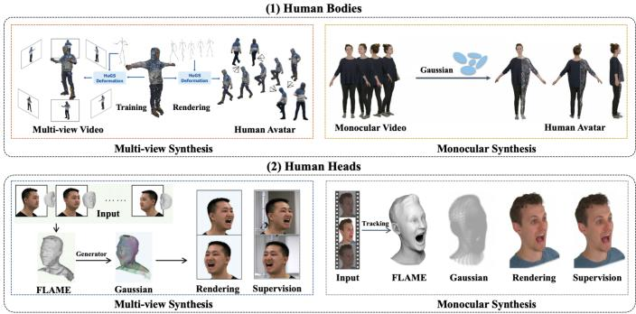
Fig. 8. An illustration of 3D-GS on virtual humans for modeling (1) bodies and (2) heads. Images courtesy of [142], [143], [144], and [145].
Departing from the commonly used LBS, D3GA [150] employs cage deformation to transform Gaussians to represent deformable human avatars. Notably, the deformation is conducted in a compositional manner where separate cages deform the body, face, and garment avatars and each part is controlled by three specialized MLPs, i.e., the cage node correction network, the Gaussian correction network, and the shading network.
HiFi4G [151] resorts to traditional non-rigid tracking for highfidelity human performance rendering from multi-view videos. A dual-graph mechanism, comprising of a coarse deformation graph and a fine-grained Gaussian graph, is first introduced to bridge 3D Gaussian with non-rigid tracking. The former first generates per-frame geometry proxies using NeuS2 [152] and then applies the Embedded Deformation (ED) [153] to establish model-to-model motion correspondences. Then, the finegrained Gaussian graph is generated by initializing Gaussians from the mesh of the first frame and applying pruning and densification operations to the subsequent key frames for temporal coherence. In the optimization step, HiFi4G employs ED graph to warp Gaussian under the constraint of a temporal regularizer, a smooth term, and an adaptive weighting mechanism.
Contrary to most methods relying on per-subject optimization, Zheng et al. [154] presented a generalizable method called GPS-Gaussian to synthesize novel views of unseen human performers in real-time without any fine-tuning or optimization. GPS-Gaussian directly regresses Gaussian parameters in a feedforward manner from massive 3D human scan data with diverse properties to learn abundant human priors, thus enabling instantaneous human appearance rendering. Moreover, GPS-Gaussian adopts the efficient 2D CNN to encode the source view image and predict the 2D Gaussian parameter maps. The depth estimation module generates a learned depth map, which represents the 3D position map. Meanwhile, the RGB image serves as the color map. These two components are used to formulate the Gaussian representation. Additionally, the remaining parameters of the 3D Gaussians are predicted in a pixel-wise manner. Later, these parameter maps are lifted to 3D space and aggregated for novel view rendering.
2) Monocular Video Synthesis: As another research line, Kocabas et al. [155] designed a deformation model to represent the animatable human and the static scene with 3D Gaussians from only a monocular video. In practice, the human body and the scene are disentangled and separately constructed from the SMPL body model and the SfM point cloud. The human Gaussians are parameterized by their center locations in a canonical space, a feature triplane and three MLPs which predict properties of the Gaussians. Similar to [155], ParDy-Human [156] separates the human and the background with two sets of Gaussians. Additionally, the human Gaussian representation is extended with two extra features, parent index and surface normal, indicating the mesh face that the Gaussian is generated from. Thus, the canonical Gaussian can be deformed to the pose with Per Vertex Deformation (PVD) according to its parent mesh face. The garment motions are further refined by a deformation refinement module that predicts residual refinements for PVD deformations. Li et al. [157] proposed Human101 for both fast reconstruction and real-time rendering from monocular videos. For fast convergence, Human101 first extracts the point cloud from four frames covering the front, back, left and right views of the human body and then converts the generated point cloud into canonical Gaussians. In the deformation process, Human101 assigns each Gaussian to its nearest SMPL triangular facet and deforms its rotation and spherical harmonics with Triangular Face Rotation accordingly.
3DGS-Avatar [158] also initializes a set of canonical Gaussians via sampling on the SMPL mesh template. It decomposes the human deformation into a non-rigid part that encodes pose-dependent cloth deformation, and a rigid transformation controlled by the human skeleton.
Since the view-dependent color encoding does not suit the monocular setting, 3DGS-Avatar substitutes the convention of learning spherical harmonic coefficients with a color MLP. In practice, it canonicalizes the viewing direction used in the color modeling and additionally learns a per-frame latent code to encode the different light effects across frames. Instead of optimizing per-Gaussian colors, Jena et al. [141] proposed a novel neural color field to implicitly regularize the color of nearby Gaussians, which later provides an additional 3D supervision to the Gaussian positions. The visualized results prove that this operation effectively reduces the texture artifacts on test frames.
To circumvent the inaccurate motion estimation in the monocular setting, Hu et al. [159] proposed GaussianAvatar to jointly optimize motion and appearance with isotropic 3D Gaussians. Specifically, given a fitted SMPL model, a network encodes the pose-dependent feature from a 2D UV position map and further integrates the feature with a learnable feature tensor that encodes the coarse global appearance. Thus, the integrated feature serves as the input for the Gaussian parameter encoder to predict the Gaussian properties like position offset, color and scale. Notably, the human avatar is represented by isotropic Gaussians with fixed rotation and opacity since anisotropic 3D Gaussians are prone to overfitting the most frequently seen view via monocular supervision.
The direct application of LBS transformation for 3D Gaussians may introduce inaccurate information derived from SMPL. In this regard, GauHuman [160] starts with LBS weights from SMPL and rectifies SMPL poses with an effective pose refinement module. GauHuman also integrates the KL divergence of 3D Gaussians to regulate the split and clone process, taking the crucial metric, the distance between 3D Gaussians, into consideration. To speed up the optimization, a novel merge operation is introduced to merge redundant Gaussians that meet certain criteria. The inaccurate mapping from the canonical space to the observation space may induce overfitting and artifacts. To tackle this, Li et al. [143] proposed to preserve the local geometry property of 3D Gaussians during the deformation with three regularization losses, i.e., the local-rigidity loss, the local-rotation loss, and the local-isometry loss [77]. Since the monocular video input inherently lacks multi-view supervision, a split-with-scale operation to address the potential blurs and oversized Gaussians and a pose refinement to optimize the SMPL pose parameters during training are introduced for further refinement.
SplattingAvatar [161] proposed a hybrid avatar representation of3D Gaussian and meshes to disentangle the human motion and appearance. Specifically, the low-frequency motion information is controlled by the mesh while the high-frequency geometry and appearance details are modeled by the Gaussians. This method associates Gaussians with mesh triangles using Phong surface [162] embeddings and jointly optimizes Gaussians and the embedding parameters. Besides, the pose-dependent rotation and translation are explicitly defined by the mesh instead of the MLP-based linear blend skinning. Similarly, GoMAvatar [163] introduced the Gaussian-on-Mesh representation that leverages 3D Gaussians for real-time rendering and utilizes skeleton-based deformable mesh for geometry modeling and compatibility with graphics pipelines. Contrary to the direct computation of the final color in the previous rendering methods, GoMAvatar decomposes the RGB image into the pseudo albedo map and the pseudo shading map where the former is rendered by Gaussian splatting and the latter is derived from the normal map obtained from mesh rasterization. Following HumanNeRF [164], this method also integrates a pose refinement module to optimize the estimated poses learned from monocular videos.
B. Human Heads
1) Multi-View Video Synthesis: GaussianAvatars [144] focuses on the reconstruction of head avatars by rigging 3D Gaussians to a parametric morphable face model. In particular, 3D Gaussians are initialized at the center of each triangle of the FLAME [165] mesh, with their parameters defined by the triangle properties. Besides, to accommodate the adaptive density control operations to the method without breaking the connection between triangles and splats, a binding inheritance strategy is designed to additionally parameterize the Gaussian with the index of its parent triangle so that new Gaussian points remain rigged to the FLAME mesh. However, such a method lacks control over areas that are not modeled by FLAME such as hair and other accessories. Xu et al. [145] proposed a fully learnable expression-conditioned deformation field to avoid the limited capability of the LBS-based formulation. The proposed method involves feeding the positions of the 3D Gaussians, along with their expression coefficients, into an MLP to accurately predict the displacements between the neutral expression and the target expression. Besides, instead of initializing Gaussians with a morphable template, it designs a geometry-guided initialization strategy by optimizing an SDF field, a color field and a deformation field to extract a mesh and construct Gaussians on the basic head surface.
2) Monocular Video Synthesis: Dhamo et al. [166] proposed a head animation method called HeadGas that can work with different 3D morphable models from monocular video inputs. To create the correspondence between the specific expression and 3D Gaussians, this method extends Gaussian representation with a base of latent features, which is multiplied with an expression vector and then fed to the MLP to yield the final color and opacity. Since 3D Morphable Model (3DMM) based methods often fail to model non-facial structures such as eyeglasses and hairstyles, Zhao et al. [167] proposed a Pointbased Morphable Shape Model (PMSM) to replace meshes with points for enhanced representation flexibility. PMSM builds on FLAME to inherit its morphable capability. Then, it converts the FLAME mesh to points by uniformly sampling points on the surface of the mesh. Additionally, points off the meshes are sampled to capture complex structures ignored by the FLAME model. For faster convergence of head shape alignment, the process is conducted in an analysis-bysynthesis manner with point splatting. Finally, 3D Gaussian is employed in combination with PMSM for effective fine-detail rendering.
Chen et al. [168] adopted a different approach to deform the Gaussian representation from monocular videos by transforming the mean position of Gaussians from the canonical space to the deformed space with LBS and adjusting other Gaussian parameters correspondingly with a deformation field. Gaussian-Head [169] disentangles the modeling of the head geometry and texture attributes by utilizing a motion deformation field to fit the head shape as well as dynamic facial movements and a multi-resolution tri-plane to store the appearance information of Gaussians. To resolve the feature dilution, this monocularvideo-based method devises a Gaussian derivation strategy to generate multiple doppelgangers of each core Gaussian in the canonical space through learnable rotation transformations and then integrates sub-features of these doppelgangers to form the final canonical feature for the core Gaussian.
Challenges: i) Existing human avatar methods rely on deformable models like SMPL, SMPL-X and FLAME for Gaussian initialization. ii) Unlike carefully captured videos in the universal datasets, in-the-wild videos are relatively coarse and more challenging to reconstruct. iii) The environmental lighting is not parameterized in most methods, which makes relighting the avatars infeasible. Also, the uneven illumination in the video may degrade the synthesis quality. iv) The intrinsic structure and connectivity relation between Gaussians in local regions are then ignored.
Opportunities: i) The reconstruction performance of both the 3DMM-based methods and SMPL-based methods is constrained by the initialization of model parameters. The inaccuracy in the fixed parameters may severely affect the model’s alignment with the supervisions, thus leading to blurred texture. In this regard, enhancing the expression ability of the template model during the optimization is a promising breakthrough. ii) For human head modeling, methods that utilize 3DMM to control the motions also fail to express subtle facial expressions. Exploring a more effective method to separately control the non-rigid deformation is a focus of future work.
IX. DISCUSSIONS AND FUTURE WORK
3D Gaussian Splatting has demonstrated significant potential in the fields of computer graphics and computer vision. Nevertheless, various challenges persist due to the intricate structures and diverse tasks associated with 3D Gaussian Splatting. This section aims to address these challenges and present potential avenues for future research.
Handling Floating Elements in 3D-GS: One significant challenge in 3D Gaussian Splatting pertains to the presence of floating objects in the rendered space, which mainly arise from image backgrounds. To mitigate the occurrence of these floats and improve the quality of image rendering, the utilization of opacity thresholds has been proposed, as demonstrated by the enhancement in image quality measured through metrics such as PSNR and SSIM [49]. The presence of these floating elements considerably affects the visual fidelity of the rendered images. To address this issue, a potential avenue for further investigation could center around exploring strategies to anchor these floats in closer proximity to surfaces, thereby enhancing their positional relevance and overall contribution to image quality. There are two primary research directions that guide the movement of these floats towards the surfaces: i) Geometry-guided rendering and ii) Depth-guided rendering.
Trade-off Between Rendering and Reconstruction: On one hand, the direct utilization of 3D-GS allows for efficient mesh reconstruction. However, it often results in non-continuous meshes. For example, SuGaR [6]) employs an opacity-based approach to generate 3D Gaussians around the mesh surface, compromising the rendering quality. Similarly, 2D-GS [170] compresses the 3D volume into a collection of planar Gaussian disks oriented in 2D, aiming to improve the quality of the reconstructions. On the other hand, when 3D-GS is combined with other representations, like signed distance fields, it yields smoother surfaces; however, this comes at the cost of increased reconstruction time. An illustration of this is the optimization of an implicit signed distance field in conjunction with 3D-GS as demonstrated by 3DGSR [171], aiming to enhance the reconstruction process. This highlights the importance of adopting a nuanced approach that balances the pursuit of rendering quality with the accurate reconstruction and speed of the process. Hence, there are two potential directions for further research in this regard. The first involves building upon the existing frameworks of 2D-GS or 3D-GS for reconstruction, utilizing solely one representation. The second entails exploring how 3D-GS could enhance or complement other time-efficient representations, thus presenting a promising area [84].
Rendering Realism: Current lighting decomposition methods show limited effectiveness in scenes with indistinct boundaries, often requiring the inclusion of object masks during optimization. This limitation primarily arises from the detrimental influence of the background on the optimization process, a consequence of the distinctive qualities of the point clouds generated through 3D Gaussian Splatting. Unlike conventional surface points, these point clouds display particle-like properties, including color and partial transparency, deviating from conventional surface points. Considering these challenges, integrating Multi-View Stereo into the optimization process could significantly improve geometry accuracy. Furthermore, specular and anisotropic effects are primarily influenced by the properties of the material, while reflections are closely tied to the environment and geometry. It is essential to consider these factors as well.
Real-time Rendering: To facilitate real-time rendering, Scaffold-GS [2] introduces anchor points from a sparse grid [172], which aids in distributing local 3D Gaussians and thus improves rendering speed. However, the method’s reliance on a uniform grid size limits its adaptability. The utilization of octree representations has emerged as a promising alternative, providing the flexibility to divide complex regions into smaller grids for detailed processing [50]. However, the usage of octree in Octree-GS still needs to be manually assigned. Consequently, there is an urgent need to devise adaptive octree representations. While these methods show potential for achieving real-time rendering in small scenes, scaling up to large environments, such as cityscapes [172], will require further efforts.
Few-short 3D-GS: Recent few-shot studies [7], [42] explore optimizing Gaussian splatting with depth guidance in a fewshot setting. While promising, these approaches face notable challenges. The success of few-shot methods heavily relies on the accuracy of monocular depth estimation models. Moreover, their performance may vary across different data domains. Additionally, the dependency on fitting the estimated depth to COLMAP [43] points introduces reliance on the performance of COLMAP itself. Consequently, these limitations pose challenges in handling textureless areas or complex surfaces where COLMAP [43] may encounter difficulties. For future research, it would be beneficial to investigate the optimization of 3D scenes using interdependent depth estimates, reducing reliance on COLMAP points. Another avenue for future work involves investigating methods to regularize geometry across diverse datasets, particularly in areas where depth estimation, such as the sky, presents challenges.
Intergration ofPhysics: In contrast to the natural world, where the physical behavior and visual appearance of materials are inherently interconnected, the traditional physics-based visual content generation pipeline has been a laborious and multistage process. This process involves constructing the geometry, preparing it for simulation (often using techniques like tetrahedralization), simulating the physics, and eventually rendering the scene. Although this sequence is effective, it introduces intermediate stages that can result in discrepancies between the simulation and the final visualization. This disparity is also evident within the NeRF paradigm [173], [174], where the rendering geometry is embedded within a simulation geometry. To address this issue, it is recommended to unite these two aspects by advocating for a unified representation of material substance that can be utilized for both simulation and rendering purposes. In addition, it is essential to conduct further research on large and complex motion as well as the utilization of multiple materials for various objects. Additionally, an area worth exploring is the automatic assignment of materials to 3D-GS, which shows potential for future development.
Accurate Reconstruction: The original 3D-GS cannot distinguish between specular and non-specular areas, thereby unable to produce reasonable 3D Gaussians in regions with specular reflections [40], [58]. The presence of irrational 3D Gaussians can significantly influence the reconstruction, leading to the generation of flawed meshes. Furthermore, it has been observed that the inclusion of specular reflection components can also result in the production of unreliable meshes [6]. Hence, to achieve precise reconstruction, it is essential to decompose the 3D Gaussian through illumination prior to accurately reconstructing the mesh. Otherwise, another future direction involves large-scale reconstruction, such as VastGaussian [92]. However, the presence of numerous 3D Gaussians in a massive scene may pose challenges in terms of storage space and rendering speed. Consequently, a promising direction is to develop techniques that can effectively handle 3D Gaussians for large-scale reconstruction, while simultaneously addressing the issues of storage space and memory requirements.
Realistic Generation: Pioneered by DreamGaussian [111], GaussianDreamer [114], 3D-GS begins its journey on 3D generation. However, the geometries and textures of the generated 3D assets still require improvement. In terms of geometries, the integration of more precise SDF and UDF into the 3D-GS allows for the generation of meshes that are more realistic and accurate. Additionally, various conventional graphic techniques, such as Medial Fields [175], can be effectively utilized. Regarding textures, two recently proposed methods, MVD [176] and TexFusion [177], demonstrate impressive capabilities in texture generation. These advancements have the potential to be applied in the context of textured mesh generation with 3D-GS. Additionally, Relightable3DGaussian [58] and GaussianShader [40] have explored the shading aspects of 3D-GS. However, the question ofBRDF decomposition on the generated meshes remains unanswered. Additionally, the exploration of4D generation holds great promise, requiring further enhancement of temporal consistency.
Combining 3D-GS with Large Foundation Models: Recent studies, such as Shi et al. [128], have demonstrated that embedding language into 3D-GS can significantly enhance 3D scene understanding. With the advent of large foundation models in 2023, their remarkable capabilities have been showcased across a broad spectrum of vision tasks. Notably, the SAM model has emerged as a powerful tool for segmentation, finding successful applications within the 3D-GS [127], [129], [134]. Beyond segmentation, LLM models have shown promise for languageguided generation, manipulation, and perception tasks. This highlights the versatility and utility of these models in a wide range of applications, further emphasizing their significance in 3D-GS. Recent studies [128] have demonstrated that embedding language into 3D-GS can significantly enhance 3D scene understanding. With the advent of large foundation models in 2023, their remarkable capabilities have been showcased across a broad spectrum of vision tasks. Notably, the SAM model has emerged as a powerful tool for segmentation, finding successful applications within the 3D-GS [127], [129], [134]. Beyond segmentation, LLM models have shown promise for languageguided generation, manipulation, and perception tasks. This highlights the versatility and utility of these models in a wide range of applications, further emphasizing their significance in 3D-GS.
Several works employ 3D-GS as a supplementary tool to improve performance. For instance, NeuSG [84] utilizes 3D-GS to enhance the reconstruction of NeuS, while SpecNeRF [63] incorporates Gaussian directional encoding to model specular reflections. Consequently, the distinctive characteristics of 3D-GS can be seamlessly integrated into existing methods to further boost their performance. It is conceivable that 3D-GS can be combined with the Large Reconstruction Model (LRM) [178], or with existing perception techniques in Autonomous Vehicles, to enhance their perception capabilities.
REFERENCES
[1] B. Kerbl, G. Kopanas, T. Leimkühler, and G. Drettakis, “3D Gaussian splatting for real-time radiance field rendering,” ACM Trans. Graph., vol. 42, no. 4, pp. 1–14, 2023.
[2] T. Lu et al., “Scaffold-GS: Structured 3D Gaussians for view-adaptive rendering,” in Proc. Conf. Comput. Vis. Pattern Recognit., 2024, pp. 20654–20664.
[3] Z. Yu, A. Chen, B. Huang, T. Sattler, and A. Geiger, “Mip-splatting: Alias-free 3D Gaussian splatting,” in Proc. Conf. Comput. Vis. Pattern Recognit., 2024, pp. 19447–19456.
[4] G. Wu et al., “4D Gaussian splatting for real-time dynamic scene rendering,” in Proc. Conf. Comput. Vis. Pattern Recognit., 2024, pp. 20310– 20320.
[5] R. J. Cotton and C. Peyton, “Dynamic Gaussian splatting from markerless motion capture reconstruct infants movements,” in Proc. IEEE/CVF Winter Conf. Appl. Comput. Vis., 2024, pp. 60–68.
[6] A. Guédon and V. Lepetit, “Sugar: Surface-aligned Gaussian splatting for efficient 3D mesh reconstruction and high-quality mesh rendering,” in Proc. Conf. Comput. Vis. Pattern Recognit., 2024, pp. 5254–5263.
[7] J. Chung, J. Oh, and K. M. Lee, “Depth-regularized optimization for 3D Gaussian splatting in few-shot images,” in Proc. Conf. Comput. Vis. Pattern Recognit., 2024, pp. 811–820.
[8] M. Zwicker, H. Pfister, J. V. Baar, and M. Gross, “Surface splatting,” in Proc. 28th Annu. Conf. Comput. Graph. Interactive Techn., 2001, pp. 371–378.
[9] G. Kopanas, J. Philip, T. Leimkühler, and G. Drettakis, “Point-based neural rendering with per-view optimization,” Comput. Graph. Forum, vol. 40, no. 4, pp. 29–43, 2021.
[10] M. Zwicker, H. Pfister, J. V. Baar, and M. Gross, “EWA volume splatting,” in Proc. IEEE Visual., 2001, pp. 29–538.
[11] M. Botsch and L. Kobbelt, “High-quality point-based rendering on modern GPUs,” in Proc. Pacific Conf. Comput. Graph. Appl., 2003, pp. 335–343.
[12] S. Rusinkiewicz and M. Levoy, “QSplat: A multiresolution point rendering system for large meshes,” in Proc. 27th Annu. Conf. Comput. Graph. Interactive Techn., 2000, pp. 343–352.
[13] B. Mildenhall, P. P. Srinivasan, M. Tancik, J. T. Barron, R. Ramamoorthi, and R. Ng, “NERF: Representing scenes as neural radiance fields for view synthesis,” Commun. ACM, vol. 65, no. 1, pp. 99–106, 2021.
[14] W. Yifan, F. Serena, S. Wu, C. Öztireli, and O. Sorkine-Hornung, “Differentiable surface splatting for point-based geometry processing,” ACM Trans. Graph., vol. 38, no. 6, pp. 1–14, 2019.
[15] J. T. Barron, B. Mildenhall, D. Verbin, P.P. Srinivasan, and P. Hedman, “Mip-NeRF 360: Unbounded anti-aliased neural radiance fields,” in Proc. IEEE/CVF Conf. Comput. Vis. Pattern Recognit., 2022, pp. 5460–5469.
[16] A. Knapitsch, J. Park, Q.-Y. Zhou, and V. Koltun, “Tanks and temples: Benchmarking large-scale scene reconstruction,” ACM Trans. Graph., vol. 36, no. 4, pp. 1–13, 2017.
[17] P. Hedman, J. Philip, T. Price, J.-M. Frahm, G. Drettakis, and G. Brostow, “Deep blending for free-viewpoint image-based rendering,” ACM Trans. Graph., vol. 37, no. 6, pp. 1–15, 2018.
[18] T. Li et al., “Neural 3D video synthesis from multi-view video,” in Proc. IEEE/CVF Conf. Comput. Vis. Pattern Recognit., 2022, pp. 5511–5521.
[19] A. Pumarola, E. Corona, G. Pons-Moll, and F. Moreno-Noguer, “D-NeRF: Neural radiance fields for dynamic scenes,” in Proc. IEEE/CVF Conf. Comput. Vis. Pattern Recognit., 2021, pp. 10313–10322.
[20] B. Mildenhall et al., “Local light field fusion: Practical view synthesis with prescriptive sampling guidelines,” ACM Trans. Graph., vol. 38, pp. 1–14, 2019.
[21] T. Zhou, R. Tucker, J. Flynn, G. Fyffe, and N. Snavely, “Stereo magnification: Learning view synthesis using multiplane images,” ACM Trans. Graph., vol. 37, no. 4, pp. 1–12, 2018.
[22] A. Liu, R. Tucker, V. Jampani, A. Makadia, N. Snavely, and A. Kanazawa, “Infinite nature: Perpetual view generation of natural scenes from a single image,” in Proc. IEEE/CVF Int. Conf. Comput. Vis., 2021, pp. 14458–14467.
[23] A. X. Chang et al., “ShapeNet: An information-rich 3D model repository,” 2015, arXiv:1512.03012.
[24] R. Shao, Z. Zheng, H. Tu, B. Liu, H. Zhang, and Y. Liu, “Tensor4D: Efficient neural 4D decomposition for high-fidelity dynamic reconstruction and rendering,” in Proc. IEEE/CVF Conf. Comput. Vis. Pattern Recognit., 2023, pp. 16632–16642.
[25] K. Kania, K. M. Yi, M. Kowalski, T. Trzci´nski, and A. Tagliasacchi, “CoNeRF: Controllable neural radiance fields,” in Proc. IEEE/CVF Conf. Comput. Vis. Pattern Recognit., 2022, pp. 18602–18611.
[26] G. Moon, S.-I. Yu, H. Wen, T. Shiratori, and K. M. Lee, “InterHand2.6M: A dataset and baseline for 3D interacting hand pose estimation from a single RGB image,” in Proc. Eur. Conf. Comput. Vis., 2020, pp. 548–564.
[27] Z. Ren, A. Agarwala, B. Russell, A. G. Schwing, and O. Wang, “Neural volumetric object selection,” in Proc. IEEE/CVF Conf. Comput. Vis. Pattern Recognit., 2022, pp. 6123–6132.
[28] A. Mirzaei et al., “SPIn-NeRF: Multiview segmentation and perceptual inpainting with neural radiance fields,” in Proc. IEEE/CVF Conf. Comput. Vis. Pattern Recognit., 2023, pp. 20669–20679.
[29] J. Kerr, C. M. Kim, K. Goldberg, A. Kanazawa, and M. Tancik, “LERF: Language embedded radiance fields,” in Proc. IEEE/CVF Conf. Comput. Vis. Pattern Recognit., 2023, pp. 19672–19682.
[30] J. Straub et al., “The replica dataset: A digital replica of indoor spaces,” 2019, arXiv:1906.05797.
[31] A. Geiger, P. Lenz, and R. Urtasun, “Are we ready for autonomous driving? The KITTI vision benchmark suite,” in Proc. IEEE Conf. Comput. Vis. Pattern Recognit., 2012, pp. 3354–3361.
[32] M. Deitke et al., “Objaverse: A universe of annotated 3D objects,” in Proc. IEEE/CVF Conf. Comput. Vis. Pattern Recognit., 2023, pp. 13142–13153.
[33] T. Wu et al., “OmniObject3D: Large-vocabulary 3D object dataset for realistic perception, reconstruction and generation,” in Proc. IEEE/CVF Conf. Comput. Vis. Pattern Recognit., 2023, pp. 803–814.
[34] T. Alldieck, M. Magnor, W. Xu, C. Theobalt, and G. Pons-Moll, “Video based reconstruction of 3D people models,” in Proc. IEEE/CVF Conf. Comput. Vis. Pattern Recognit., 2018, pp. 8387–8397.
[35] M. Habermann, L. Liu, W. Xu, M. Zollhoefer, G. Pons-Moll, and C. Theobalt, “Real-time deep dynamic characters,” ACM Trans. Graph., vol. 40, no. 4, pp. 1–16, 2021.
[36] S. Peng et al., “Neural body: Implicit neural representations with structured latent codes for novel view synthesis of dynamic humans,” in Proc. IEEE/CVF Conf. Comput. Vis. Pattern Recognit., 2021, pp. 9050–9059.
[37] Z. Zheng, H. Huang, T. Yu, H. Zhang, Y. Guo, and Y. Liu, “Structured local radiance fields for human avatar modeling,” in Proc. IEEE/CVF Conf. Comput. Vis. Pattern Recognit., 2022, pp. 15872–15882.
[38] W. Jiang, K. M. Yi, G. Samei, O. Tuzel, and A. Ranjan, “NeuMan: Neural human radiance field from a single video,” in Proc. Eur. Conf. Comput. Vis., 2022, pp. 402–418.
[39] M. I¸sık et al., “HumanRF: High-fidelity neural radiance fields for humans in motion,” ACM Trans. Graph, vol. 42, no. 4, pp. 1–12, 2023.
[40] Y. Jiang et al., “GaussianShader: 3D Gaussian splatting with shading functions for reflective surfaces,” in Proc. Conf. Comput. Vis. Pattern Recognit., 2024, pp. 5322–5332.
[41] A. Kratimenos, J. Lei, and K. Daniilidis, “DynMF: Neural motion factorization for real-time dynamic view synthesis with 3D Gaussian splatting,” 2023, arXiv:2312.00112.
[42] Z. Zhu, Z. Fan, Y. Jiang, and Z. Wang, “FSGS: Real-time few-shot view synthesis using Gaussian splatting,” 2023, arXiv:2312.00451.
[43] J. L. Schonberger and J.-M. Frahm, “Structure-from-motion revisited,” in Proc. IEEE/CVF Conf. Comput. Vis. Pattern Recognit., 2016, pp. 4104–4113.
[44] W. H. Equitz, “A new vector quantization clustering algorithm,” IEEE Trans. Acoust., Speech, Signal Process., vol. 37, no. 10, pp. 1568–1575, Oct., 1989.
[45] K. Navaneet, K. P. Meibodi, S. A. Koohpayegani, and H. Pirsiavash, “Compact3D: Compressing Gaussian splat radiance field models with vector quantization,” 2023, arXiv:2311.18159.
[46] S. Girish, K. Gupta, and A. Shrivastava, “EAGLES: Efficient accelerated 3D Gaussians with lightweight encodings,” 2023, arXiv:2312.04564.
[47] J. C. Lee, D. Rho, X. Sun, J. H. Ko, and E. Park, “Compact 3D Gaussian representation for radiance field,” in Proc. Conf. Comput. Vis. Pattern Recognit., 2024, pp. 21729–21728.
[48] N. Zeghidour, A. Luebs, A. Omran, J. Skoglund, and M. Tagliasacchi, “SoundStream: An end-to-end neural audio codec,” IEEE/ACM Trans. Acoust., Speech, Signal Process., vol. 30, pp. 495–507, 2022.
[49] Z. Fan, K. Wang, K. Wen, Z. Zhu, D. Xu, and Z. Wang, “LightGaussian: Unbounded 3D Gaussian compression with 15x reduction and 200+ fps,” 2023, arXiv:2311.17245.
[50] K. Ren et al., “Octree-GS: Towards consistent real-time rendering with LOD-structured 3D Gaussians,” 2024, arXiv:2403.17898.
[51] K. Katsumata, D. M. Vo, and H. Nakayama, “An efficient 3D Gaussian representation for monocular/multi-view dynamic scenes,” 2023, arXiv:2311.12897.
[52] Z. Yan, W. F. Low, Y. Chen, and G. H. Lee, “Multi-scale 3D Gaussian splatting for anti-aliased rendering,” in Proc. Conf. Comput. Vis. Pattern Recognit., 2024, pp. 20923–20931.
[53] J. Zhang, F. Zhan, M. Xu, S. Lu, and E. Xing, “FreGS: 3D gaussian splatting with progressive frequency regularization,” in Proc. Conf. Comput. Vis. Pattern Recognit., 2024, pp. 21424–21433.
[54] H. Nyquist, “Certain topics in telegraph transmission theory,” Trans. Amer. Inst. Elect. Engineers, vol. 47, no. 2, pp. 617–644, Apr. 1928.
[55] C. E. Shannon, “Communication in the presence of noise,” Proc. IRE, vol. JPROC-37, no. 1, pp. 10–21, Jan. 1949.
[56] B. Mildenhall, P. Hedman, R. Martin-Brualla, P. P. Srinivasan, and J. T. Barron, “NeRF in the dark: High dynamic range view synthesis from noisy raw images,” in Proc. IEEE/CVF Conf. Comput. Vis. Pattern Recognit., 2022, pp. 16169–16178.
[57] R. Szeliski, Computer Vision: Algorithms and Applications. Berlin, Germany: Springer, 2022.
[58] J. Gao et al., “Relightable 3D Gaussian: Real-time point cloud relighting with BRDF decomposition and ray tracing,” 2023, arXiv:2311.16043.
[59] T. Karras, “Maximizing parallelism in the construction of BVHs, octrees, and k-d trees,” in Proc. Fourth ACM SIGGRAPH/Eurographics Conf. High-Perform. Graph., 2012, pp. 33–37.
[60] J. T. Kajiya, “The rendering equation,” in Proc. 13thAnnu. Conf. Comput. Graph. Interactive Techn., 1986, pp. 143–150.
[61] Z. Liang, Q. Zhang, Y. Feng, Y. Shan, and K. Jia, “GS-IR: 3D Gaussian splatting for inverse rendering,” in Proc. Conf. Comput. Vis. Pattern Recognit., 2024, pp. 21644–21653.
[62] B. Karis and E. Games, “Real shading in unreal engine 4,” Proc. Physically Based Shading Theory Pract., vol. 4, no. 3, pp. 1–59, 2013.
[63] L. Ma et al., “SpecNeRF: Gaussian directional encoding for specular reflections,” in Proc. Conf. Comput. Vis. Pattern Recognit., 2024, pp. 21188–21198.
[64] C. Godard, O. M. Aodha, and G. J. Brostow, “Unsupervised monocular depth estimation with left-right consistency,” in Proc. IEEE/CVF Conf. Comput. Vis. Pattern Recognit., 2017, pp. 6602–6611.
[65] J. Canny, “A computational approach to edge detection,” IEEE Trans. Pattern Anal. Mach. Intell., vol. PAMI-8, no. 6, pp. 679–698, Nov. 1986.
[66] D. Zorin, P. Schröder, and W. Sweldens, “Interpolating subdivision for meshes with arbitrary topology,” in Proc. 23rd Annu. Conf. Comput. Graph. Interactive Techn., 1996, pp. 189–192.
[67] H. Xiong, S. Muttukuru, R. Upadhyay, P. Chari, and A. Kadambi, “SparseGS: Real-time 360°sparse view synthesis using Gaussian splatting,” 2023, arXiv:2312.00206.
[68] X. Long, C. Lin, P. Wang, T. Komura, and W. Wang, “Sparseneus: Fast generalizable neural surface reconstruction from sparse views,” in Proc Eur. Conf. Comput. Vis., 2022, pp. 210–227.
[69] R. Ranftl, K. Lasinger, D. Hafner, K. Schindler, and V. Koltun, “Towards robust monocular depth estimation: Mixing datasets for zero-shot crossdataset transfer,” IEEE Trans. Pattern Anal. Mach. Intell., vol. 44, no. 3, pp. 1623–1637, Mar., 2022.
[70] S. M. H. Miangoleh, S. Dille, L. Mai, S. Paris, and Y. Aksoy, “Boosting monocular depth estimation models to high-resolution via contentadaptive multi-resolution merging,” in Proc. IEEE/CVF Conf. Comput. Vis. Pattern Recognit., 2021, pp. 9680–9689.
[71] B. Poole, A. Jain, J. T. Barron, and B. Mildenhall, “DreamFusion: Text-to-3D using 2D diffusion,” in Proc. 11th Int. Conf. Learn. Representations, 2023, pp. 1–20.
[72] J. Li et al., “DNGaussian: Optimizing sparse-view 3D gaussian radiance fields with global-local depth normalization,” in Proc. Conf. Comput. Vis. Pattern Recognit., 2024, pp. 20775–20785.
[73] S. Fridovich-Keil, G. Meanti, F. R. Warburg, B. Recht, and A. Kanazawa, “K-planes: Explicit radiance fields in space, time, and appearance,” in Proc. IEEE/CVF Conf. Comput. Vis. Pattern Recognit., 2023, pp. 12479–12488.
[74] Z. Lu et al., “3D geometry-aware deformable Gaussian splatting for dynamic view synthesis,” in Proc. Conf. Comput. Vis. Pattern Recognit., 2024, pp. 8900–8910.
[75] B. P. Duisterhof et al., “MD-Splatting: Learning metric deformation from 4D Gaussians in highly deformable scenes,” 2023, arXiv:2312.00583.
[76] A. Cao and J. Johnson, “HexPlane: A fast representation for dynamic scenes,” in Proc. IEEE/CVF Conf. Comput. Vis. Pattern Recognit., 2023, pp. 130–141.
[77] J. Luiten, G. Kopanas, B. Leibe, and D. Ramanan, “Dynamic 3D Gaussians: Tracking by persistent dynamic view synthesis,” 2023, arXiv:2308.09713.
[78] J. Sun, H. Jiao, G. Li, Z. Zhang, L. Zhao, and W. Xing, “3DGStream: Onthe-fly training of 3D Gaussians for efficient streaming of photo-realistic free-viewpoint videos,” in Proc. Conf. Comput. Vis. Pattern Recognit., 2024, pp. 20675–20685.
[79] T. Müller, F. Rousselle, J. Novák, and A. Keller, “Real-time neural radiance caching for path tracing,” ACM Trans. Graph., vol. 40, no. 4, pp. 1–16, 2021.
[80] T. Müller, A. Evans, C. Schied, and A. Keller, “Instant neural graphics primitives with a multiresolution hash encoding,” ACM Trans. Graph., vol. 41, no. 4, pp. 1–15, 2022.
[81] Z. Yang, H. Yang, Z. Pan, X. Zhu, and L. Zhang, “Real-time photorealistic dynamic scene representation and rendering with 4D Gaussian splatting,” 2023, arXiv:2310.10642.
[82] T. Xie et al., “PhysGaussian: Physics-integrated 3D Gaussians for generative dynamics,” in Proc. Conf. Comput. Vis. Pattern Recognit., 2024, pp. 4389–4398.
[83] Z. Jiang, H. Rahmani, S. Black, and B. M. Williams, “3D points splatting for real-time dynamic hand reconstruction,” 2023, arXiv:2312.13770.
[84] H. Chen, C. Li, and G. H. Lee, “NeuSG: Neural implicit surface reconstruction with 3D Gaussian splatting guidance,” 2023, arXiv:2312.00846.
[85] P. Wang, L. Liu, Y. Liu, C. Theobalt, T. Komura, and W. Wang, “NeuS: Learning neural implicit surfaces by volume rendering for multi-view reconstruction,” in Proc. Annu. Conf. Neural Inf. Process. Syst., 2021, pp. 27171–27183.
[86] D. Charatan, S. Li, A. Tagliasacchi, and V. Sitzmann, “pixelSplat: 3D Gaussian splats from image pairs for scalable generalizable 3D reconstruction,” in Proc. Conf. Comput. Vis. Pattern Recognit., 2024, pp. 19457–19467.
[87] Z.-X. Zou et al., “Triplane meets Gaussian splatting: Fast and generalizable single-view 3D reconstruction with transformers,” in Proc. Conf. Comput. Vis. Pattern Recognit., 2024, pp. 10324–10335.
[88] S. Szymanowicz, C. Rupprecht, and A. Vedaldi, “Splatter image: Ultrafast single-view 3D reconstruction,” in Proc. Conf. Comput. Vis. Pattern Recognit., 2024, pp. 10208–10217.
[89] D. Das, C. Wewer, R. Yunus, E. Ilg, and J. E. Lenssen, “Neural parametric Gaussians for monocular non-rigid object reconstruction,” in Proc. Conf. Comput. Vis. Pattern Recognit., 2024, pp. 10715–10725.
[90] Y. Lin, Z. Dai, S. Zhu, and Y. Yao, “Gaussian-flow: 4D reconstruction with dynamic 3D Gaussian particle,” in Proc. Conf. Comput. Vis. Pattern Recognit., 2024, pp. 21136–21145.
[91] Z. Yang, X. Gao, W. Zhou, S. Jiao, Y. Zhang, and X. Jin, “Deformable 3D Gaussians for high-fidelity monocular dynamic scene reconstruction,” in Proc. Conf. Comput. Vis. Pattern Recognit., 2024, pp. 20331–20341.
[92] J. Lin et al., “VastGaussian: Vast 3D Gaussians for large scene reconstruction,” 2024, arXiv:2402.17427.
[93] X. Zhou, Z. Lin, X. Shan, Y. Wang, D. Sun, and M.-H. Yang, “DrivingGaussian: Composite Gaussian splatting for surrounding dynamic autonomous driving scenes,” in Proc. Conf. Comput. Vis. Pattern Recognit., pp. 21634–21643, 2024.
[94] Y. Chen, C. Gu, J. Jiang, X. Zhu, and L. Zhang, “Periodic vibration Gaussian: Dynamic urban scene reconstruction and real-time rendering,” 2023, arXiv:2311.18561.
[95] Y.-H. Huang, Y.-T. Sun, Z. Yang, X. Lyu, Y.-P. Cao, and X. Qi, “SC-GS: Sparse-controlled Gaussian splatting for editable dynamic scenes,” in Proc. Conf. Comput. Vis. Pattern Recognit., 2024, pp. 4220–4230.
[96] Z. Canfes, M. F. Atasoy, A. Dirik, and P. Yanardag, “Text and image guided 3D avatar generation and manipulation,” in Proc. IEEE/CVF Winter Conf. Appl. Comput. Vis., 2023, pp. 4410–4420.
[97] C. Yu et al., “Towards high-fidelity text-guided 3D face generation and manipulation using only images,” in Proc. IEEE/CVF Int. Conf. Comput. Vis., 2023, pp. 15280–15291.
[98] S. Hwang, J. Hyung, D. Kim, M.-J. Kim, and J. Choo, “FaceCLIPNeRF: Text-driven 3D face manipulation using deformable neural radiance fields,” in Proc. IEEE/CVF Int. Conf. Comput. Vis., 2023, pp. 3446–3456.
[99] J. Fang, J. Wang, X. Zhang, L. Xie, and Q. Tian, “GaussianEditor: Editing 3D Gaussians delicately with text instructions,” in Proc. Conf. Comput. Vis. Pattern Recognit., 2024, pp. 20902–20911.
[100] J. Zhuang, D. Kang, Y.-P. Cao, G. Li, L. Lin, and Y. Shan, “Tip-editor: An accurate 3D editor following both text-prompts and image-prompts,” 2024, arXiv:2401.14828.
[101] L. Gao et al., “Mesh-based Gaussian splatting for real-time large-scale deformation,” 2024, arXiv:2402.04796.
[102] E. Tretschk, A. Tewari, V. Golyanik, M. Zollhöfer, C. Lassner, and C. Theobalt, “Non-rigid neural radiance fields: Reconstruction and novel view synthesis of a dynamic scene from monocular video,” in Proc. IEEE/CVF Int. Conf. Comput. Vis., 2021, pp. 12939–12950.
[103] V. Lazova, V. Guzov, K. Olszewski, S. Tulyakov, and G. Pons-Moll, “Control-NeRF: Editable feature volumes for scene rendering and manipulation,” in Proc. IEEE/CVF Winter Conf. Appl. Comput. Vis., 2023, pp. 4329–4339.
[104] T. Xu and T. Harada, “Deforming radiance fields with cages,” in Proc. Eur. Conf. Comput. Vis., 2022, pp. 159–175.
[105] C. Pokhariya et al., “MANUS: Markerless hand-object grasp capture using articulated 3D Gaussians,” in Proc. Conf. Comput. Vis. Pattern Recognit., 2024, pp. 2197–2208.
[106] J. Lei, Y. Wang, G. Pavlakos, L. Liu, and K. Daniilidis, “GART: Gaussian articulated template models,” in Proc. Conf. Comput. Vis. Pattern Recognit., 2024, pp. 19876–19887.
[107] J. Huang and H. Yu, “Point’n move: Interactive scene object manipulation on gaussian splatting radiance fields,” 2023, arXiv:2311.16737.
[108] Y. Chen et al., “GaussianEditor: Swift and controllable 3D editing with Gaussian splatting,” in Proc. Conf. Comput. Vis. Pattern Recognit., 2024, pp. 21475–21485.
[109] R. Shao et al., “Control4D: Dynamic portrait editing by learning 4D GAN from 2D diffusion-based editor,” 2023, arXiv:2305.20082.
[110] H. Yu, J. Julin, Z. Á. Milacski, K. Niinuma, and L. A. Jeni, “CoGS: Controllable Gaussian splatting,” in Proc. Conf. Comput. Vis. Pattern Recognit., 2024, pp. 21624–21633.
[111] J. Tang, J. Ren, H. Zhou, Z. Liu, and G. Zeng, “DreamGaussian: Generative Gaussian splatting for efficient 3D content creation,” 2023, arXiv:2309.16653.
[112] H. Ouyang, K. Heal, S. Lombardi, and T. Sun, “Text2Immersion: Generative immersive scene with 3D Gaussians,” 2023, arXiv: 2312.09242.
[113] Y. Yin, D. Xu, Z. Wang, Y. Zhao, and Y. Wei, “4DGen: Grounded 4D content generation with spatial-temporal consistency,” 2023, arXiv:2312.17225.
[114] T. Yi et al., “GaussianDreamer: Fast generation from text to 3D Gaussian splatting with point cloud priors,” 2023, arXiv:2310.08529.
[115] Z. Chen, F. Wang, and H. Liu, “Text-to-3D using Gaussian splatting,” in Proc. Conf. Comput. Vis. Pattern Recognit., 2024, pp. 21401–21412.
[116] M. Armandpour, H. Zheng, A. Sadeghian, A. Sadeghian, and M. Zhou, “Re-imagine the negative prompt algorithm: Transform 2D diffusion into 3D, alleviate janus problem and beyond,” 2023, arXiv:2304.04968.
[117] A. Nichol, H. Jun, P. Dhariwal, P. Mishkin, and M. Chen, “Point-e: A system for generating 3D point clouds from complex prompts,” 2022, arXiv:2212.08751.
[118] D. Xu et al., “AGG: Amortized generative 3D Gaussians for single image to 3D,” 2024, arXiv:2401.04099.
[119] Y. Liang, X. Yang, J. Lin, H. Li, X. Xu, and Y. Chen, “LucidDreamer: Towards high-fidelity text-to-3D generation via interval score matching,” in Proc. Conf. Comput. Vis. Pattern Recognit., pp. 6517–6528, 2024.
[120] A. Vilesov, P. Chari, and A. Kadambi, “CG3D: Compositional generation for text-to-3D via Gaussian splatting,” 2023, arXiv:2311.17907.
[121] J. Chung, S. Lee, H. Nam, J. Lee, and K. M. Lee, “LucidDreamer: Domain-free generation of 3D Gaussian splatting scenes,” in Proc. Conf. Comput. Vis. Pattern Recognit., 2024, pp. 6517–6528.
[122] R. Rombach, A. Blattmann, D. Lorenz, P. Esser, and B. Ommer, “High-resolution image synthesis with latent diffusion models,” in Proc. IEEE/CVF Conf. Comput. Vis. Pattern Recognit., 2022, pp. 10674–10685.
[123] H. Ling, S. W. Kim, A. Torralba, S. Fidler, and K. Kreis, “Align your Gaussians: Text-to-4D with dynamic 3D Gaussians and composed diffusion models,” in Proc. Conf. Comput. Vis. Pattern Recognit., 2024, pp. 8576–8588.
[124] Y. Liu et al., “SyncDreamer: Generating multiview-consistent images from a single-view image,” 2023, arXiv:2309.03453.
[125] J. Ren et al., “DreamGaussian4D: Generative 4D Gaussian splatting,” 2023, arXiv:2312.17142.
[126] Z. Pan, Z. Yang, X. Zhu, and L. Zhang, “Fast dynamic 3D object generation from a single-view video,” 2024, arXiv:2401.08742.
[127] S. Zhou et al., “Feature 3DGS: Supercharging 3D Gaussian splatting to enable distilled feature fields,” in Proc. Conf. Comput. Vis. Pattern Recognit., 2024, pp. 21678–21685.
[128] J.-C. Shi, M. Wang, H.-B. Duan, and S.-H. Guan, “Language embedded 3D Gaussians for open-vocabulary scene understanding,” in Proc. Conf. Comput. Vis. Pattern Recognit., 2024, pp. 5333–5343.
[129] M. Ye, M. Danelljan, F. Yu, and L. Ke, “Gaussian grouping: Segment and edit anything in 3D scenes,” 2023, arXiv:2312.00732.
[130] Y. Yan et al., “Street Gaussians for modeling dynamic urban scenes,” 2024, arXiv:2401.01339.
[131] X. Zuo, P. Samangouei, Y. Zhou, Y. Di, and M. Li, “FMGS: Foundation model embedded 3D Gaussian splatting for holistic 3D scene understanding,” 2024, arXiv:2401.01970.
[132] A. Kirillov et al., “Segment anything,” in Proc. IEEE/CVF Int. Conf. Comput. Vis., 2023, pp. 3992–4003.
[133] Y. Liu et al., “Segment any point cloud sequences by distilling vision foundation models,” Adv. Neural Inf. Process. Syst., 2023, pp. 1–37.
[134] J. Cen et al., “Segment any 3D Gaussians,” 2023, arXiv:2312.00860.
[135] X. Hu et al., “Semantic anything in 3D Gaussians,” 2024, arXiv:2401.17857.
[136] C. Yan et al., “GS-SLAM: Dense visual SLAM with 3D Gaussian splatting,” in Proc. Conf. Comput. Vis. Pattern Recognit., 2024, pp. 19595– 19604.
[137] H. Matsuki, R. Murai, P. H. Kelly, and A. J. Davison, “Gaussian splatting SLAM,” in Proc. Conf. Comput. Vis. Pattern Recognit., 2024, pp. 18039– 18048.
[138] H. Huang, L. Li, H. Cheng, and S.-K. Yeung, “Photo-SLAM: Real-time simultaneous localization and photorealistic mapping for monocular, stereo, and RGB-D cameras,” in Proc. Conf. Comput. Vis. Pattern Recognit., 2024, pp. 21584–21593.
[139] N. Keetha et al., “SplaTAM: Splat, track & map 3D Gaussians for dense RGB-D SLAM,” in Proc. Conf. Comput. Vis. Pattern Recognit., 2024, pp. 21357–21366.
[140] V. Yugay, Y. Li, T. Gevers, and M. R. Oswald, “Gaussian-SLAM: Photorealistic dense SLAM with Gaussian splatting,” 2023, arXiv:2312.10070.
[141] R. Jena, G. S. Iyer, S. Choudhary, B. Smith, P. Chaudhari, and J. Gee, “SplatArmor: Articulated Gaussian splatting for animatable humans from monocular RGB videos,” 2023, arXiv:2311.10812.
[142] A. Moreau, J. Song, H. Dhamo, R. Shaw, Y. Zhou, and E. Pérez-Pellitero, “Human Gaussian splatting: Real-time rendering of animatable avatars,” in Proc. Conf. Comput. Vis. Pattern Recognit., 2024, pp. 788–798.
[143] M. Li, S. Yao, Z. Xie, K. Chen, and Y.-G. Jiang, “GaussianBody: Clothed human reconstruction via 3D Gaussian splatting,” 2024, arXiv:2401.09720.
[144] S. Qian, T. Kirschstein, L. Schoneveld, D. Davoli, S. Giebenhain, and M. Nießner, “GaussianAvatars: Photorealistic head avatars with rigged 3D Gaussians,” in Proc. Conf. Comput. Vis. Pattern Recognit., 2024, pp. 20299–20308.
[145] Y. Xu et al., “Gaussian head avatar: Ultra high-fidelity head avatar via dynamic Gaussians,” in Proc. Conf. Comput. Vis. Pattern Recognit., 2024, pp. 1931–1941.
[146] Z. Li, Z. Zheng, L. Wang, and Y. Liu, “Animatable Gaussians: Learning pose-dependent Gaussian maps for high-fidelity human avatar modeling,” in Proc. Conf. Comput. Vis. Pattern Recognit., 2024, pp. 19711–19722.
[147] L. Wang et al., “StyleAvatar: Real-time photo-realistic portrait avatar from a single video,” in ACM SIGGRAPH, 2023, pp. 1–10.
[148] H. Pang, H. Zhu, A. Kortylewski, C. Theobalt, and M. Habermann, “Ash: Animatable Gaussian splats for efficient and photoreal human rendering,” in Proc. Conf. Comput. Vis. Pattern Recognit., 2024, pp. 1165–1175.
[149] L. Kavan, S. Collins, J. Žára, and C. O’Sullivan, “Skinning with dual quaternions,” in Proc. Symp. Interactive 3D Graph. Games, 2007, pp. 39–46.
[150] W. Zielonka, T. Bagautdinov, S. Saito, M. Zollhöfer, J. Thies, and J. Romero, “Drivable 3D Gaussian avatars,” 2023, arXiv:2311.08581.
[151] Y. Jiang et al., “HiFi4G: High-fidelity human performance rendering via compact Gaussian splatting,” 2023, arXiv:2312.03461.
[152] Y. Wang, Q. Han, M. Habermann, K. Daniilidis, C. Theobalt, and L. Liu, “NeuS2: Fast learning of neural implicit surfaces for multi-view reconstruction,” in Proc. IEEE/CVF Conf. Comput. Vis. Pattern Recognit., 2023, pp. 3272–3283.
[153] R. W. Sumner, J. Schmid, and M. Pauly, “Embedded deformation for shape manipulation,” in Proc. ACM SIGGRAPH Papers, 2007, pp. 1–8.
[154] S. Zheng et al., “GPS-Gaussian: Generalizable pixel-wise 3D Gaussian splatting for real-time human novel view synthesis,” in Proc. Conf. Comput. Vis. Pattern Recognit., 2024, pp. 19680–19690.
[155] M. Kocabas, J.-H. R. Chang, J. Gabriel, O. Tuzel, and A. Ranjan, “HUGS: Human Gaussian splats,” in Proc. Conf. Comput. Vis. Pattern Recognit., 2024, pp. 505–515.
[156] H. Jung et al., “Deformable 3D Gaussian splatting for animatable human avatars,” 2023, arXiv:2312.15059.
[157] M. Li, J. Tao, Z. Yang, and Y. Yang, “Human101: Training 100+fps human Gaussians in 100s from 1 view,” 2023, arXiv:2312.15258.
[158] Z. Qian, S. Wang, M. Mihajlovic, A. Geiger, and S. Tang, “3DGS-Avatar: Animatable avatars via deformable 3D Gaussian splatting,” in Proc. Conf. Comput. Vis. Pattern Recognit., 2024, pp. 5020–5030.
[159] L. Hu et al., “GaussianAvatar: Towards realistic human avatar modeling from a single video via animatable 3D Gaussians,” in Proc. Conf. Comput. Vis. Pattern Recognit., 2024, pp. 634–644.
[160] S. Hu and Z. Liu, “GauHuman: Articulated Gaussian splatting from monocular human videos,” in Proc. Conf. Comput. Vis. Pattern Recognit., 2024, pp. 20418–20431.
[161] Z. Shao et al., “SplattingAvatar: Realistic real-time human avatars with mesh-embedded Gaussian splatting,” in Proc. Conf. Comput. Vis. Pattern Recognit., 2024, pp. 1606–1616.
[162] J. Shen et al., “The phong surface: Efficient 3D model fitting using lifted optimization,” in Proc. Eur. Conf. Comput. Vis., 2020, pp. 687–703.
[163] J. Wen, X. Zhao, Z. Ren, A. G. Schwing, and S. Wang, “GomAvatar: Efficient animatable human modeling from monocular video using Gaussians-on-mesh,” in Proc. Conf. Comput. Vis. Pattern Recognit., 2024, pp. 2059–2069.
[164] C.-Y. Weng, B. Curless, P. P. Srinivasan, J. T. Barron, and I. Kemelmacher-Shlizerman, “HumanNeRF: Free-viewpoint rendering of moving people from monocular video,” in Proc. IEEE/CVF Conf. Comput. Vis. Pattern Recognit., 2022, pp. 16189–16199.
[165] T. Li, T. Bolkart, M. J. Black, H. Li, and J. Romero, “Learning a model of facial shape and expression from 4D scans,” ACM Trans. Graph., vol. 36, no. 6, 2017, Art. no. 194.
[166] H. Dhamo et al., “HeadGaS: Real-time animatable head avatars via 3D Gaussian splatting,” 2023, arXiv:2312.02902.
[167] Z. Zhao, Z. Bao, Q. Li, G. Qiu, and K. Liu, “PSAvatar: A point-based morphable shape model for real-time head avatar creation with 3D Gaussian splatting,” 2024, arXiv:2401.12900.
[168] Y. Chen et al., “MonoGaussianAvatar: Monocular Gaussian point-based head avatar,” 2023, arXiv:2312.04558.
[169] J. Wang, J.-C. Xie, X. Li, F. Xu, C.-M. Pun, and H. Gao, “GaussianHead: High-fidelity head avatars with learnable Gaussian derivation,” 2023, arXiv:2312.01632.
[170] B. Huang, Z. Yu, A. Chen, A. Geiger, and S. Gao, “2D Gaussian splatting for geometrically accurate radiance fields,” 2024, arXiv:2403.17888.
[171] X. Lyu et al., “3DGSR: Implicit surface reconstruction with 3D Gaussian splatting,” 2024, arXiv:2404.00409.
[172] L. Xu et al., “Grid-guided neural radiance fields for large urban scenes,” in Proc. IEEE/CVF Conf. Comput. Vis. Pattern Recognit., 2023, pp. 8296–8306.
[173] X. Li et al., “PAC-NeRF: Physics augmented continuum neural radiance fields for geometry-agnostic system identification,” in Proc. 11th Int. Conf. Learn. Representations, 2023, pp. 1–14.
[174] M. Chu et al., “Physics informed neural fields for smoke reconstruction with sparse data,” ACM Trans. Graph., vol. 41, no. 4, pp. 1–14, 2022.
[175] D. Rebain, K. Li, V. Sitzmann, S. Yazdani, K. M. Yi, and A. Tagliasacchi, “Deep medial fields,” 2021, arXiv:2106.03804.
[176] Y. Liu, M. Xie, H. Liu, and T.-T. Wong, “Text-guided texturing by synchronized multi-view diffusion,” 2023, arXiv:2311.12891.
[177] T. Cao, K. Kreis, S. Fidler, N. Sharp, and K. Yin, “TexFusion: Synthesizing 3D textures with text-guided image diffusion models,” in Proc. IEEE/CVF Int. Conf. Comput. Vis., 2023, pp. 4146–4158.
[178] Y. Xu et al., “DMV3D: Denoising multi-view diffusion using 3D large reconstruction model,” 2023, arXiv:2311.09217.
Ben Fei (Graduate Student Member, IEEE) received the MS degree in 2021 from the Department of Material Science from Fudan University, Shanghai, China, where he is currently working toward the PhD degree with the School of Computer Science. His research interests include generative models, poin cloud processing, and 3D vision. He is an IEEE Young Professional.
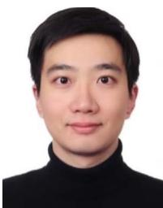
Jingyi Xu received the MSc degree in data science from the University of Exeter, Exeter, U.K., in 2020. He is currently working toward the PhD degree (2nd-year) Fudan University, Shanghai, China. His research interests include artificial intelligence and data mining. His current research interests include 3-D segmentation and deep learning approaches for time series analysis.
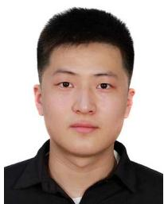
Rui Zhang (Graduate Student Member, IEEE) received the bachelor’s degree from the School of Management, Jilin University, China, in 2020. He is currently working toward the MS degree with the School of Computer Science, Fudan University, Shanghai, China. His research interests include point cloud completion, 3-D reconstruction, and 3-D generation.
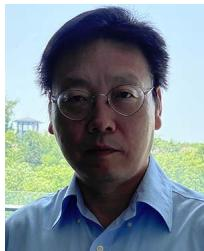
Weidong Yang (Member, IEEE) received the PhD degree in software engineering from Xidian University, Xi’an, China, in 1999. He was a postdoctoral researcher with the School of Computer Science, Fudan University, Shanghai, China, from 1999 to 2001. He is a professor with the School of Computer Science, Fudan University. His research interests include Big Data, knowledge engineering, database and data mining, and software engineering.
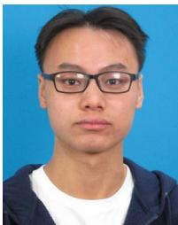
Qingyuan Zhou received the Master of Engineering degree in 2023 from Fudan University, Shanghai, China, where he is currently working toward the doctoral degree in computer science and technology. His research interests include 3-D reconstruction and perception in the field of computer vision.
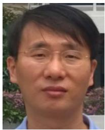
Modeling International Conference in 2022, Symposium on Solid and Physical Modeling in 2022 and 2023, Geometric Modeling and Processing Conference in 2014 and 2021, and Conference on Computational Visual Media in 2020.
Ying He (Member, IEEE) is currently an associate professor with the School of Computer Science and Engineering, Nanyang Technological University, Singapore. His research focuses on geometric computing and analysis. He actively participates in the technical program committees of major conferences in geometric modeling and is serving/has served on the editorial boards of IEEE Transactions on Visualization and Computer Graphics, Computer Graphics Forum, and Computational Visual Media. He has also served as the General/Program co-chair for the Shape
md/2025_3DGS-Survey.md 预渲染生成。公式以 MathML 呈现，浏览器原生渲染，不依赖外部脚本或字体 CDN。